1. INTRODUÇÃO
Este trabalho consiste em desenvolver e documentar o Conecta Vagas DF, uma plataforma web que reúne, em um único lugar, vagas de emprego, cursos e e-books de capacitação e os perfis profissionais de candidatos do Distrito Federal, com o objetivo de aproximar quem procura trabalho das empresas que oferecem oportunidades.
O que motivou a escolha do tema foi a observação de como as vagas circulam na região: boa parte delas é divulgada em cartazes, grupos de mensagens e perfis de redes sociais, de forma dispersa e sem padrão. O candidato precisa procurar em muitos lugares, não sabe se o seu perfil atende ao que a vaga pede e raramente recebe retorno. A empresa, por sua vez, recebe currículos sem organização e gasta tempo para descobrir quais candidatos são mais adequados.
Os principais objetivos específicos são centralizar as vagas do DF, automatizar o preenchimento do perfil a partir do currículo, calcular a compatibilidade entre candidato e vaga, organizar o processo de candidatura com acompanhamento de status e recomendar cursos e e-books que ajudem o candidato a se qualificar. Ao longo do desenvolvimento, o sistema ganhou também um calibrador, com o qual o administrador ajusta a extração de dados sem mexer no código, e um leitor de cartazes que funciona no próprio navegador, sem que ninguém precise instalar programas.
O trabalho está dividido em três partes. A primeira é o levantamento do problema e das necessidades de candidatos e empresas. A segunda é a documentação do projeto, que descreve como o software foi projetado: requisitos, casos de uso, classes, sequências, modelo de dados e testes. A terceira parte se refere à codificação do sistema.
Ao final do projeto espera-se que o software realize fielmente as funções descritas neste documento e que possa ser utilizado por candidatos, empresas e instituições do Distrito Federal que precisam de uma forma mais organizada de divulgar e encontrar oportunidades.
2. OBJETIVO GERAL
Desenvolver uma plataforma web que centralize vagas de emprego e cursos de capacitação do Distrito Federal e que indique, de forma automática e explicável, a compatibilidade entre candidatos e vagas, com uma extração de dados que o próprio administrador consegue ajustar para errar cada vez menos.
3. OBJETIVOS ESPECÍFICOS
- Centralizar a divulgação de vagas de emprego do Distrito Federal, com busca e filtros;
- Automatizar o preenchimento do perfil do candidato a partir do currículo enviado (PDF, DOC ou DOCX), inclusive a foto;
- Gerar automaticamente o portfólio profissional do candidato;
- Calcular a compatibilidade (match) entre candidato e vaga, com nota de 0 a 100 e explicação da nota;
- Organizar o processo de candidatura, com acompanhamento de status e retorno da empresa;
- Permitir que empresas publiquem vagas a partir do texto de um anúncio ou da imagem de um cartaz, lida no próprio navegador, sem instalar programas;
- Recomendar cursos e e-books que cubram as competências que faltam ao candidato, com os e-books disponíveis para baixar na biblioteca da plataforma;
- Permitir que o administrador ajuste as máquinas de extração sem mexer no código (calibrador), com termos cadastrados e o reconhecimento automático de empresas e instituições já cadastradas;
- Garantir ao usuário o controle dos próprios dados, inclusive a exclusão da própria conta, conforme a LGPD;
- Oferecer ao administrador o controle de usuários, categorias, cursos, vagas, candidaturas e assinaturas;
- Verificar o sistema com testes automáticos executados antes de cada alteração do código.
4. SITUAÇÃO PROBLEMA
No Distrito Federal, grande parte das vagas de emprego é divulgada em cartazes afixados em comércios, em grupos de mensagens e em perfis de redes sociais. Algumas perguntas são feitas diariamente por quem procura trabalho: onde estão as vagas da minha região? O meu currículo atende ao que a vaga pede? O que preciso aprender para conseguir essa vaga? A empresa recebeu a minha candidatura?
Do lado das empresas, principalmente as pequenas, a situação se repete: os currículos chegam por canais diferentes, sem organização, e não há como saber rapidamente quais candidatos são mais compatíveis com a vaga. Todo esse controle é feito manualmente, o que gasta tempo e aumenta o risco de oportunidades e informações se perderem. Além disso, muitas ferramentas de leitura automática exigem a instalação de programas, o que afasta justamente os pequenos anunciantes, que só têm o celular ou um computador simples.
5. JUSTIFICATIVA
Por reunir em uma só plataforma a divulgação de vagas, o perfil profissional do candidato, o acompanhamento das candidaturas e a indicação de cursos, esta solução atende às necessidades de candidatos e empresas de forma organizada. Diferentemente de um simples mural de vagas, o sistema lê o currículo, monta o perfil e explica ao candidato por que ele é, ou não, compatível com cada vaga, indicando o que falta e onde aprender.
Além disso, o sistema foi construído com tecnologias gratuitas e amplamente usadas no ensino técnico (PHP, MySQL e XAMPP), sem dependência de serviços pagos e sem exigir a instalação de programas: o leitor de cartazes roda no navegador de quem usa o site. Isso permite sua implantação em escolas, instituições e órgãos da região com baixo custo.
6. PROPOSTA
Construir um sistema web que permita ao candidato cadastrar-se, enviar o currículo e ter o perfil preenchido automaticamente, visualizar o seu portfólio e a nota de compatibilidade com cada vaga, candidatar-se, acompanhar o retorno das empresas e, quando quiser, excluir a própria conta. As empresas poderão publicar e gerenciar vagas, inclusive a partir do cartaz, receber candidaturas ordenadas pela compatibilidade e consultar o banco de talentos. O administrador controlará usuários, categorias, cursos e e-books, vagas, candidaturas e assinaturas.
O sistema também oferecerá planos demonstrativos, sem cobrança real: o Candidato VIP (candidaturas ilimitadas e destaque para as empresas) e a Empresa Premium (vagas ilimitadas, destaque das vagas e banco de talentos completo). Para que a extração (de vaga, de curso ou de currículo) erre cada vez menos, o administrador poderá ajustá-la em um painel próprio, o calibrador, sem mexer no código. Desta forma é possível obter um controle melhor de todo o processo, da divulgação da vaga até o retorno ao candidato.
7. ESCOPO DO SISTEMA
7.1. Requisitos Funcionais
[RF001] Realizar login
Prioridade: ☒ Essencial ☐ Importante ☐ Desejável
– O sistema deverá permitir que o usuário (candidato, empresa ou administrador) acesse o sistema com e-mail e senha cadastrados.
[RF002] Cadastrar conta
Prioridade: ☒ Essencial ☐ Importante ☐ Desejável
– O sistema deverá permitir que o visitante crie uma conta de candidato ou de empresa, informando nome, e-mail, senha e telefone, com aceite obrigatório do termo de autorização e privacidade (LGPD).
[RF003] Encerrar sessão
Prioridade: ☒ Essencial ☐ Importante ☐ Desejável
– O sistema deverá permitir que o usuário saia da sua conta (logout) de forma segura.
[RF004] Recuperar senha
Prioridade: ☐ Essencial ☒ Importante ☐ Desejável
– O sistema deverá permitir que o usuário solicite um link de redefinição de senha, válido por 30 minutos e de uso único.
[RF005] Consultar vagas
Prioridade: ☒ Essencial ☐ Importante ☐ Desejável
– O sistema deverá permitir consultar as vagas abertas por palavra-chave, categoria, cidade, tipo de contratação, nível e modelo de trabalho (presencial, remoto ou híbrido).
[RF006] Visualizar detalhes da vaga
Prioridade: ☒ Essencial ☐ Importante ☐ Desejável
– O sistema deverá exibir os dados completos da vaga (descrição, requisitos, benefícios, salário, local e contato) e, para o candidato logado, a nota de compatibilidade.
[RF007] Consultar cursos e e-books
Prioridade: ☐ Essencial ☒ Importante ☐ Desejável
– O sistema deverá permitir consultar cursos, e-books e vídeos de capacitação, com filtros por categoria, modalidade, nível e gratuidade, e baixar o PDF dos e-books guardados na biblioteca da plataforma.
[RF008] Alterar perfil do candidato
Prioridade: ☒ Essencial ☐ Importante ☐ Desejável
– O sistema deverá permitir que o candidato cadastre e altere os seus dados profissionais: título, resumo, objetivo, cidade, formação, experiências, habilidades, idiomas, CNH, pretensão salarial e foto.
[RF009] Enviar currículo
Prioridade: ☒ Essencial ☐ Importante ☐ Desejável
– O sistema deverá permitir que o candidato envie o currículo nos formatos PDF, DOC ou DOCX, com tamanho máximo de 10 MB.
[RF010] Extrair dados do currículo
Prioridade: ☒ Essencial ☐ Importante ☐ Desejável
– O sistema deverá ler o currículo enviado e extrair automaticamente contato, experiências, formação, cursos, habilidades, idiomas, demais informações e a foto, preenchendo o perfil do candidato.
[RF011] Aplicar dados do relatório de extração
Prioridade: ☐ Essencial ☒ Importante ☐ Desejável
– O sistema deverá exibir um relatório com o que foi encontrado, aplicado, mantido e o que faltou, permitindo ao candidato escolher quais dados substituir no perfil.
[RF012] Excluir currículo
Prioridade: ☐ Essencial ☒ Importante ☐ Desejável
– O sistema deverá permitir que o candidato exclua um currículo enviado.
[RF013] Gerar portfólio
Prioridade: ☐ Essencial ☒ Importante ☐ Desejável
– O sistema deverá montar automaticamente o portfólio profissional do candidato quando o cadastro estiver completo (telefone, título, cidade, resumo, objetivo, formação e habilidades).
[RF014] Calcular match
Prioridade: ☒ Essencial ☐ Importante ☐ Desejável
– O sistema deverá calcular uma nota de compatibilidade de 0 a 100 entre o candidato e cada vaga ativa, considerando competências (50 pontos), cargo (20), localização (15) e nível (15), e explicar a nota.
[RF015] Recalcular match
Prioridade: ☐ Essencial ☐ Importante ☒ Desejável
– O sistema deverá permitir que o candidato solicite o recálculo do match e recalculá-lo automaticamente ao salvar o perfil, enviar ou excluir currículo e criar ou editar vagas.
[RF016] Candidatar-se à vaga
Prioridade: ☒ Essencial ☐ Importante ☐ Desejável
– O sistema deverá permitir que o candidato se candidate a uma vaga aberta, escolhendo um currículo e escrevendo uma carta de apresentação opcional, respeitando o limite do plano.
[RF017] Cancelar candidatura
Prioridade: ☐ Essencial ☒ Importante ☐ Desejável
– O sistema deverá permitir que o candidato cancele uma candidatura que ainda não foi analisada pela empresa.
[RF018] Acompanhar candidaturas
Prioridade: ☒ Essencial ☐ Importante ☐ Desejável
– O sistema deverá exibir ao candidato o status de cada candidatura (enviada, em análise, entrevista, aprovado, rejeitado ou cancelada) e o retorno da empresa.
[RF019] Manter perfil da empresa
Prioridade: ☒ Essencial ☐ Importante ☐ Desejável
– O sistema deverá permitir que a empresa cadastre e altere nome fantasia, CNPJ, setor, site, cidade, descrição e logotipo.
[RF020] Cadastrar vaga
Prioridade: ☒ Essencial ☐ Importante ☐ Desejável
– O sistema deverá permitir que a empresa (ou o administrador) cadastre vagas, respeitando o limite do plano da empresa.
[RF021] Alterar vaga
Prioridade: ☒ Essencial ☐ Importante ☐ Desejável
– O sistema deverá permitir alterar os dados e o status (ativa, pausada ou encerrada) de uma vaga.
[RF022] Excluir vaga
Prioridade: ☒ Essencial ☐ Importante ☐ Desejável
– O sistema deverá permitir excluir uma vaga, removendo junto as candidaturas e os matches dela.
[RF023] Extrair vaga de anúncio ou cartaz
Prioridade: ☐ Essencial ☒ Importante ☐ Desejável
– O sistema deverá preencher o formulário da vaga a partir do texto colado de um anúncio ou da leitura (OCR) da imagem de um cartaz, feita no próprio navegador, sem instalar programas, com um carregador amarelo enquanto lê e azul quando está pronto, para revisão antes de publicar.
[RF024] Gerenciar candidaturas recebidas
Prioridade: ☒ Essencial ☐ Importante ☐ Desejável
– O sistema deverá listar as candidaturas recebidas, ordenadas por plano VIP e maior match, e permitir alterar o status e registrar um retorno ao candidato.
[RF025] Consultar banco de talentos
Prioridade: ☐ Essencial ☒ Importante ☐ Desejável
– O sistema deverá permitir que a empresa pesquise perfis públicos de candidatos por termo e cidade.
[RF026] Baixar currículo
Prioridade: ☐ Essencial ☒ Importante ☐ Desejável
– O sistema deverá permitir o download do currículo apenas ao dono, ao administrador e à empresa autorizada.
[RF027] Assinar plano
Prioridade: ☐ Essencial ☒ Importante ☐ Desejável
– O sistema deverá permitir que o candidato assine o plano VIP e a empresa assine o plano Premium (demonstrativos, por 30 dias).
[RF028] Cancelar assinatura
Prioridade: ☐ Essencial ☒ Importante ☐ Desejável
– O sistema deverá permitir cancelar a assinatura ativa, removendo os benefícios do plano.
[RF029] Manter usuários
Prioridade: ☒ Essencial ☐ Importante ☐ Desejável
– O sistema deverá permitir que o administrador cadastre, altere, ative, desative e exclua usuários.
[RF030] Manter categorias
Prioridade: ☐ Essencial ☒ Importante ☐ Desejável
– O sistema deverá permitir que o administrador cadastre, altere, ative, desative e exclua categorias de vagas e de cursos.
[RF031] Manter cursos e e-books
Prioridade: ☐ Essencial ☒ Importante ☐ Desejável
– O sistema deverá permitir que o administrador cadastre, altere, publique, oculte e exclua cursos, e-books e vídeos, inclusive preenchendo o formulário a partir do texto de divulgação ou da ficha de uma pesquisa.
[RF032] Visualizar painel
Prioridade: ☐ Essencial ☐ Importante ☒ Desejável
– O sistema deverá exibir à empresa e ao administrador um painel com indicadores e gráficos de vagas, candidaturas e match.
[RF033] Excluir a própria conta
Prioridade: ☒ Essencial ☐ Importante ☐ Desejável
– O sistema deverá permitir que o candidato exclua a própria conta, confirmando com a senha, removendo perfil, currículos e arquivos, foto, candidaturas, matches e tentativas de login (LGPD).
[RF034] Gerenciar assinaturas
Prioridade: ☐ Essencial ☒ Importante ☐ Desejável
– O sistema deverá permitir que o administrador consulte as assinaturas com filtros e conceda, altere, cancele e exclua assinaturas de candidatos e empresas.
[RF035] Calibrar as máquinas de extração
Prioridade: ☐ Essencial ☒ Importante ☐ Desejável
– O sistema deverá permitir que o administrador cadastre, altere, ative, desative e exclua termos calibrados ("quando o texto tiver o termo X, mande para Y") para a linha do anúncio, a área da vaga, a área do curso e a seção do currículo, e deverá reconhecer sozinho as empresas e as instituições já cadastradas; o termo vale mais que a regra do código e, entre dois termos, vence o mais longo.
[RF036] Testar as máquinas de extração
Prioridade: ☐ Essencial ☐ Importante ☒ Desejável
– O sistema deverá permitir que o administrador cole um anúncio, uma ficha de curso ou um currículo e veja o resultado da extração com os ajustes do calibrador, sem salvar nada, e deverá mostrar no relatório da extração da vaga o que o calibrador ajustou.
[RF037] Guardar e-books na biblioteca
Prioridade: ☐ Essencial ☒ Importante ☐ Desejável
– O sistema deverá baixar o PDF do e-book da fonte oficial (ou recebê-lo no cadastro) e guardá-lo na biblioteca da plataforma, com o botão "Baixar" e o crédito da fonte original.
[RF038] Importar fichas em lote
Prioridade: ☐ Essencial ☐ Importante ☒ Desejável
– O sistema deverá permitir que o administrador cole várias fichas de cursos e e-books de uma vez, confira uma prévia e cadastre as marcadas.
[RF039] Apoiar o projeto por Pix
Prioridade: ☐ Essencial ☐ Importante ☒ Desejável
– O sistema deverá exibir, na página inicial e no rodapé, um QR Code Pix para doações voluntárias de apoio à plataforma.
7.2. Requisitos Não Funcionais
[RNF001] Desempenho
Prioridade: ☒ Essencial ☐ Importante ☐ Desejável
– O sistema deverá exibir as páginas em até 2 segundos em rede local, concluir a leitura de um currículo em até 15 segundos e a leitura de um cartaz no navegador em cerca de 10 segundos em um computador comum ligado na tomada.
[RNF002] Disponibilidade
Prioridade: ☒ Essencial ☐ Importante ☐ Desejável
– O sistema deverá permitir a disponibilidade de 24 horas todos os dias, quando hospedado em servidor.
[RNF003] Segurança
Prioridade: ☒ Essencial ☐ Importante ☐ Desejável
– O sistema deverá armazenar senhas com hash bcrypt, usar consultas preparadas (PDO), token CSRF em todos os formulários, sessão com cookie HttpOnly e SameSite, cabeçalhos de segurança (Content-Security-Policy, X-Frame-Options, entre outros) e pausar o login por 5 minutos após 8 senhas erradas para o mesmo e-mail (ou 20 somando todos os endereços IP, ou 60 vindas de um mesmo IP).
[RNF004] Privacidade (LGPD)
Prioridade: ☒ Essencial ☐ Importante ☐ Desejável
– O sistema deverá exigir o aceite do termo de autorização e privacidade no cadastro, permitir que o candidato torne o perfil privado e exclua a própria conta com todos os dados, excluir todos os dados do usuário quando a conta for excluída pelo administrador e não guardar o e-mail completo nos registros (logs).
[RNF005] Usabilidade
Prioridade: ☒ Essencial ☐ Importante ☐ Desejável
– O sistema deverá funcionar nos navegadores Google Chrome, Mozilla Firefox e Microsoft Edge, adaptar-se a telas de computador e celular, exibir mensagens em português e mostrar um carregador (amarelo enquanto carrega, azul quando pronto) nas máquinas de extração.
[RNF006] Compatibilidade
Prioridade: ☒ Essencial ☐ Importante ☐ Desejável
– O sistema deverá funcionar em Windows 10 ou 11 com XAMPP (Apache com mod_rewrite, PHP 8.0 ou superior e MySQL/MariaDB) e também em Linux; para publicação na internet, recomenda-se PHP 8.2 ou superior.
[RNF007] Requisitos de implementação
Prioridade: ☒ Essencial ☐ Importante ☐ Desejável
– O sistema deverá ser implementado nas linguagens PHP, SQL, HTML, CSS e JavaScript, sem frameworks e sem programas a instalar: o leitor de cartazes (Tesseract.js) é servido pelo próprio site e roda no navegador.
[RNF008] Manutenibilidade
Prioridade: ☐ Essencial ☒ Importante ☐ Desejável
– O sistema deverá seguir o padrão MVC, com uma classe de acesso a dados (DAO) por assunto e as regras de negócio separadas em serviços.
[RNF009] Armazenamento de arquivos
Prioridade: ☒ Essencial ☐ Importante ☐ Desejável
– O sistema deverá aceitar currículos em PDF, DOC ou DOCX de até 10 MB, imagens JPG, PNG ou WEBP de até 3 MB (cartazes de até 8 MB) e PDFs da biblioteca de até 25 MB no envio e 150 MB quando baixados da fonte oficial, gravados fora da pasta pública com nome aleatório e tipo conferido pelo conteúdo.
[RNF010] Confiabilidade
Prioridade: ☒ Essencial ☐ Importante ☐ Desejável
– O sistema deverá usar transações e chaves estrangeiras com exclusão em cascata para manter a integridade dos dados (na tabela do calibrador, o termo permanece e só perde o autor).
[RNF011] Testabilidade
Prioridade: ☐ Essencial ☐ Importante ☒ Desejável
– O sistema deverá possuir verificação de sintaxe, teste automático rápido (smoke test) e testes de jornada pelo navegador, executados automaticamente antes de cada commit.
[RNF012] Previsibilidade do calibrador
Prioridade: ☐ Essencial ☒ Importante ☐ Desejável
– O calibrador deverá ser determinístico (o mesmo texto com os mesmos termos dá sempre o mesmo resultado), registrar cada ajuste com o termo que decidiu e, se a tabela de termos não estiver disponível, deixar a extração seguir só com as regras.
8. METODOLOGIA E TECNOLOGIAS UTILIZADAS
O projeto foi desenvolvido a partir do levantamento das dificuldades de candidatos e empresas do Distrito Federal na divulgação e na busca de vagas, com desenvolvimento orientado a objetos no padrão MVC (Model – View – Controller) e modelagem em UML e no Modelo Entidade-Relacionamento. As tecnologias utilizadas para o desenvolvimento do código do projeto foram:
- PHP 8.0 ou superior: linguagem utilizada para a programação do sistema (padrão MVC, sem frameworks);
- HTML5: construção das páginas;
- CSS3: aparência e responsividade das páginas;
- JavaScript: comportamento das páginas (filtros, pré-visualizações, carregador e gráficos do painel);
- SQL: linguagem utilizada para o banco de dados (MySQL/MariaDB, acesso via PDO);
- Tesseract.js (WebAssembly): leitura de texto em imagens de cartazes de vagas, executada no navegador de quem usa o site, sem instalação; o Tesseract OCR no servidor ficou apenas como reserva opcional;
- Calibrador: dicionário de termos cadastrados pelo administrador e de nomes já cadastrados, aplicado sobre as regras das máquinas de extração, em PHP puro, sem bibliotecas externas;
- APLICATIVOS: Visual Studio Code, XAMPP (Apache, PHP e MySQL), phpMyAdmin, MySQL Workbench, PlantUML, Git e GitHub (com gancho de verificação antes de cada commit);
- LINGUAGEM DE MODELAGEM: UML (casos de uso, classes e sequência) e Modelo Entidade-Relacionamento (notação de Chen/Heuser).
WEB SERVER e Sistema de Gerenciamento de Banco de Dados (SGBD): Apache, MySQL/MariaDB, phpMyAdmin e MySQL Workbench.
8.1. Papéis Profissionais Envolvidos
Para garantir que o sistema fosse documentado de forma completa, cada artefato deste trabalho foi produzido sob a ótica do profissional responsável por ele em uma equipe de desenvolvimento, conforme o Quadro 1.
Quadro 1 – Papéis profissionais e artefatos produzidos
| Papel | Responsabilidade | Artefato neste documento |
| Analista de Requisitos | Levantamento do problema, requisitos funcionais e não funcionais, casos de uso e suas especificações. | Seções 4 a 7; Anexos 13.1 e 13.2 |
| Analista de Sistemas / Projetista UML | Diagrama de classes e diagramas de sequência. | Anexos 13.3 e 13.4 |
| Administrador de Banco de Dados (DBA) | Modelo conceitual, modelo lógico, dicionário de dados, índices e integridade. | Anexos 13.5 e 13.6 |
| Arquiteto de Software | Arquitetura em camadas (MVC), roteamento e organização de pastas. | Anexo 13.7 |
| Desenvolvedor | Codificação em PHP, SQL, HTML, CSS e JavaScript; máquinas de extração e de match; leitor de cartaz no navegador. | Código-fonte |
| Analista de Dados (Extração) | Regras das máquinas de extração, calibrador (termos e nomes conhecidos) e testes das extrações. | Seção 8.3; RF035, RF036 e RNF012 |
| Analista de Segurança | Senhas, sessão, CSRF, uploads, controle de acesso, cabeçalhos de segurança e LGPD. | RNF003, RNF004 e Seção 8.2 |
| Analista de Testes (QA) | Plano de testes, teste rápido (smoke test), testes de jornada e gancho de commit. | Anexo 13.8 |
| Designer de Interface (UX/UI) | Telas, navegação, responsividade, carregador e mensagens ao usuário. | RNF005 |
| Gerente de Projeto | Planejamento, rastreabilidade e acompanhamento das entregas. | Anexo 13.9 |
Fonte: Autoria própria (2026).
8.2. Segurança e Proteção de Dados
A segurança foi tratada desde o projeto. As consultas ao banco usam PDO com consultas preparadas, e nenhum valor informado pelo usuário é concatenado ao SQL. As senhas são guardadas com hash bcrypt e o sistema limita o login: 8 senhas erradas para o mesmo e-mail a partir do mesmo IP (ou 20 somando todos os IPs, ou 60 vindas de um mesmo IP) dentro de 5 minutos pausam novas tentativas por 5 minutos. Fora do ambiente local a mensagem é sempre a mesma, para não revelar quais e-mails existem; a tela avisa quando faltam 3 tentativas.
A sessão usa cookie próprio, HttpOnly e SameSite, e gera um novo identificador a cada login. A cada requisição a conta é conferida no banco: se o administrador desativar o usuário ou a senha for trocada, o acesso é perdido na hora. Todos os formulários têm token CSRF e todo texto exibido passa por escape de HTML. As respostas levam cabeçalhos de segurança (Content-Security-Policy, X-Frame-Options, X-Content-Type-Options, Referrer-Policy e Permissions-Policy) e a versão do PHP não é anunciada. Só a pasta public é acessível pelo navegador; os arquivos enviados ficam em storage/uploads, com nome aleatório e tipo conferido pelo conteúdo, e só são entregues pelo sistema, com permissão. PDFs baixados da internet para a biblioteca só vêm de endereços públicos, por HTTPS verificado e com limite de tamanho.
Quanto à Lei Geral de Proteção de Dados (Lei nº 13.709/2018), o cadastro exige o aceite do termo de autorização e privacidade, o candidato pode deixar o perfil privado (fora do banco de talentos) e pode excluir a própria conta em "Meu perfil → Seus dados", confirmando com a senha: saem o perfil, os currículos e arquivos, a foto, as candidaturas, os matches e as tentativas de login. A exclusão de um usuário pelo administrador também remove tudo em cascata. O registro do link de troca de senha só existe no modo de demonstração e guarda o e-mail mascarado (ex.: ca*******@conectavagas.com).
8.3. Calibrador das Máquinas de Extração e Leitura de Cartazes
As máquinas de extração (de vagas, de cursos e de currículos) funcionam por regras: palavras-chave e padrões escritos no código. Para que errem cada vez menos sem que alguém precise mexer no código, o sistema tem um calibrador, no painel do administrador, com duas partes. A primeira são os termos calibrados: o administrador cadastra "quando o texto tiver o termo X, mande para Y" em quatro contextos — em que campo entra a linha solta do anúncio (descrição, requisitos ou benefícios), qual a área da vaga, qual a área do curso e em que seção entra a linha solta do currículo. Por exemplo, "Uniforme" vai para Benefícios e "Churrasqueiro" indica a área Alimentação. O termo vale mais que a regra do código; entre dois termos que aparecem no texto, vence o mais longo, que é o mais específico; e a comparação é feita por palavra inteira, sem acento e sem diferença entre maiúsculas e minúsculas, com a mesma normalização de termos usada pelo match (MANNING; RAGHAVAN; SCHÜTZE, 2008).
A segunda parte é automática: as empresas (anunciante das vagas e nome fantasia das empresas) e as instituições de ensino (dos cursos) que já estão cadastradas são reconhecidas no texto quando nenhuma regra achou o nome, sem nada para treinar. Tudo é determinístico: o mesmo texto com os mesmos termos dá sempre o mesmo resultado, e cada ajuste fica registrado. O relatório da extração da vaga mostra o bloco "Ajustes do calibrador" (o que a regra dizia, para onde a linha foi e qual termo decidiu), e a opção "Testar as máquinas" permite colar um anúncio, uma ficha de curso ou um currículo e ver o resultado sem salvar nada.
A leitura de cartazes deixou de depender de programas instalados no servidor: o site entrega o Tesseract.js, que lê a imagem no próprio navegador (em quatro passadas) e envia ao servidor apenas o texto com as posições das palavras. Enquanto o leitor carrega ou lê, um carregador amarelo mostra o andamento; quando está pronto, ele fica azul e o botão é liberado, o que também impede o clique duplo.
9. RESULTADOS OBTIDOS / ESPERADOS
Espera-se que ao final do projeto obtenha-se um produto que realize todas as funções especificadas neste documento com eficácia: que o candidato encontre vagas da sua região, tenha o perfil preenchido a partir do currículo e entenda a sua compatibilidade com cada vaga; que a empresa publique vagas com rapidez, até a partir de um cartaz, e receba candidaturas já ordenadas; e que o administrador mantenha a plataforma organizada. A versão implementada conta com 12 tabelas, 13 controladores, 10 classes de acesso a dados, 16 serviços (extração, calibrador, match, competências, portfólio e Pix) e 33 rotas, além de 62 vagas e 64 conteúdos de capacitação de demonstração (43 cursos e 21 e-books, estes com o PDF guardado na biblioteca da plataforma) e das contas de teste de administrador, empresa e candidato.
Na varredura final (27/09/2026) foram rastreadas 1.701 páginas nos quatro perfis sem nenhum problema; a bateria de segurança (XSS, injeção de SQL, CSRF, sessão, uploads e permissões) foi aprovada, as tabelas do banco estavam íntegras e não houve erros de PHP no servidor. Na versão final, com o calibrador (01/10/2026), o teste rápido passou em 113 de 113 verificações, inclusive as do calibrador, e os testes de jornada em 18 de 18.
10. CONSIDERAÇÕES FINAIS
O objetivo do projeto foi desenvolver uma plataforma que centralizasse vagas e cursos do Distrito Federal e indicasse a compatibilidade entre candidatos e vagas. Os objetivos específicos foram centralizar as vagas, automatizar o preenchimento do perfil a partir do currículo, gerar o portfólio, calcular o match, organizar as candidaturas, permitir a publicação de vagas a partir de anúncios e cartazes, recomendar cursos e e-books, permitir que o administrador ajuste a extração sem mexer no código, garantir o controle dos dados pelo próprio usuário e oferecer controle administrativo. Todas as especificações foram atendidas, conforme demonstram os requisitos funcionais implementados no sistema e o plano de testes.
A expectativa na criação do sistema foi alcançada, pois o objetivo principal foi facilitar o dia a dia de quem procura e de quem oferece trabalho. Com o desenvolvimento deste projeto foi possível aprofundar conhecimentos em programação orientada a objetos, banco de dados, segurança de aplicações web, extração de dados de textos e imagens, testes automatizados e modelagem de sistemas e, apesar das dificuldades encontradas, principalmente na leitura de currículos e cartazes em formatos variados, foi possível concretizá-lo.
11. CONCLUSÃO
Conclui-se que este sistema contribui para organizar a divulgação de vagas e o processo de candidatura no Distrito Federal, trazendo para candidatos e empresas informações que antes estavam dispersas e controladas manualmente, sem exigir que ninguém instale programas.
Este projeto estará disponível para atualizações, como o envio real de e-mails, a integração com meios de pagamento para os planos, a ampliação do dicionário de competências usado pelo match e melhorias de acessibilidade (ordem dos títulos e rótulos de alguns campos). Com a continuidade do trabalho, a plataforma poderá ser implantada em escolas, instituições e órgãos da região que precisem aproximar a qualificação profissional das oportunidades de emprego.
12. REFERÊNCIAS BIBLIOGRÁFICAS
ASSOCIAÇÃO BRASILEIRA DE NORMAS TÉCNICAS. NBR 14724: informação e documentação: trabalhos acadêmicos: apresentação. Rio de Janeiro: ABNT, 2011.
BRASIL. Lei nº 13.709, de 14 de agosto de 2018. Lei Geral de Proteção de Dados Pessoais (LGPD). Disponível em: <https://www.planalto.gov.br/ccivil_03/_ato2015-2018/2018/lei/l13709.htm>. Acesso em: 27 set. 2026.
ELMASRI, Ramez; NAVATHE, Shamkant B. Sistemas de banco de dados. 7. ed. São Paulo: Pearson, 2018.
GIT. Git documentation. Disponível em: <https://git-scm.com/doc>. Acesso em: 27 set. 2026.
GUEDES, Gilleanes T. A. UML 2: uma abordagem prática. 3. ed. São Paulo: Novatec, 2018.
HEUSER, Carlos Alberto. Projeto de banco de dados. 6. ed. Porto Alegre: Bookman, 2009.
MANNING, Christopher D.; RAGHAVAN, Prabhakar; SCHÜTZE, Hinrich. Introduction to information retrieval. Cambridge: Cambridge University Press, 2008.
NAPTHA. Tesseract.js: pure JavaScript OCR for more than 100 languages. Disponível em: <https://github.com/naptha/tesseract.js>. Acesso em: 27 set. 2026.
ORACLE. MySQL 8.0 Reference Manual. Disponível em: <https://dev.mysql.com/doc/refman/8.0/en/>. Acesso em: 27 set. 2026.
OWASP FOUNDATION. OWASP Top Ten. Disponível em: <https://owasp.org/www-project-top-ten/>. Acesso em: 27 set. 2026.
PLANTUML. PlantUML: linguagem de diagramas UML. Disponível em: <https://plantuml.com/>. Acesso em: 27 set. 2026.
PRESSMAN, Roger S.; MAXIM, Bruce R. Engenharia de software: uma abordagem profissional. 8. ed. Porto Alegre: AMGH, 2016.
SOMMERVILLE, Ian. Engenharia de software. 10. ed. São Paulo: Pearson, 2018.
TESSERACT OCR. Tesseract Open Source OCR Engine. Disponível em: <https://github.com/tesseract-ocr/tesseract>. Acesso em: 27 set. 2026.
THE APACHE SOFTWARE FOUNDATION. Apache module mod_rewrite. Disponível em: <https://httpd.apache.org/docs/current/mod/mod_rewrite.html>. Acesso em: 27 set. 2026.
THE PHP GROUP. Manual do PHP. Disponível em: <https://www.php.net/manual/pt_BR/>. Acesso em: 27 set. 2026.
W3C. WebAssembly Core Specification. Disponível em: <https://www.w3.org/TR/wasm-core-2/>. Acesso em: 27 set. 2026.
13. ANEXOS
13.1. Diagrama de Caso de Uso Geral
O Caso de Uso descreve as interações entre os usuários de um sistema e o sistema propriamente dito. Eles representam a interface externa do sistema e especificam um conjunto de exigências do que o sistema deve fazer. São compostos pelos atores (entidades) que interagem com o sistema relacionando-se com os casos de uso, sendo que cada caso de uso deve estar relacionado com no mínimo um ator. No Conecta Vagas DF os atores são o Visitante, o Candidato, a Empresa e o Administrador; os três últimos são especializações do Usuário autenticado. Nesta versão foram incluídos os casos de uso UC19 (excluir a própria conta), UC20 (gerenciar assinaturas) e UC21 (calibrar as máquinas de extração).
Figura 1 – Diagrama de Caso de Uso Geral
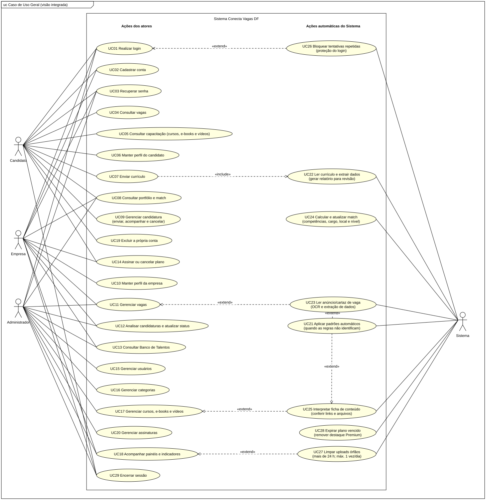
Fonte: Autoria própria (2026).
13.2. Especificação dos Diagramas de Caso de Uso
Diagrama de caso de uso específico realizar login
Figura 2 – Caso de uso específico – realizar login
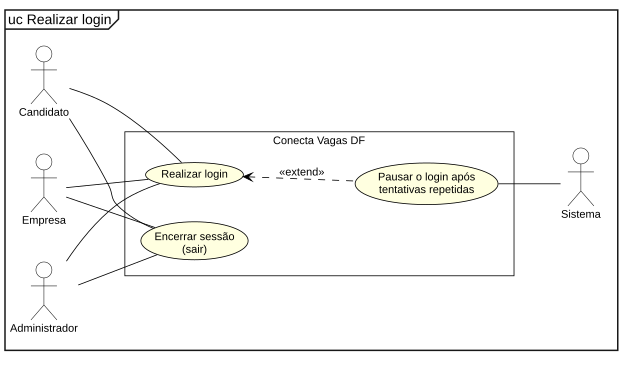
Fonte: Autoria própria (2026).
| Identificação: UC01 | |
| Nome: Realizar login | |
| Atores: Usuário (Candidato, Empresa e Administrador) | |
| Pré-condições: O ator deverá estar cadastrado e ativo no sistema. | |
| Pós-condições: O sistema exibirá o painel correspondente ao tipo de usuário. | |
| Fluxo principal | |
| Sequência típica de eventos | |
| Ator | Sistema |
| 1. O ator informa e-mail e senha nos respectivos campos e clica no botão "Entrar". | 2. O sistema verifica se o login está em pausa por tentativas repetidas e valida os dados informados. |
| 3. O sistema inicia a sessão com um novo identificador e exibe o painel do usuário. O caso de uso é encerrado. | |
| Fluxo alternativo — dados incorretos | |
| Sequência típica de eventos | |
| Ator | Sistema |
| 2.1. O sistema verifica que os dados estão incorretos, registra a tentativa e exibe a mensagem "E-mail ou senha inválidos ou conta desativada." (no ambiente local, o motivo exato); quando faltam 3 tentativas ou menos, avisa quantas restam antes da pausa, retornando ao passo 1. | |
| Fluxo alternativo — login em pausa | |
| Sequência típica de eventos | |
| Ator | Sistema |
| 2.2. O sistema verifica que houve muitas tentativas sem sucesso e exibe a mensagem "Muitas tentativas de login sem sucesso. Por segurança, aguarde N minuto(s) e tente novamente, ou use "Esqueci minha senha"." | |
| Fluxo alternativo — encerrar sessão | |
| Sequência típica de eventos | |
| Ator | Sistema |
| 3.1. O ator clica em "Sair". | 3.2. O sistema encerra a sessão e exibe a página inicial. |
Diagrama de caso de uso específico acesso à conta
Figura 3 – Caso de uso específico – acesso à conta
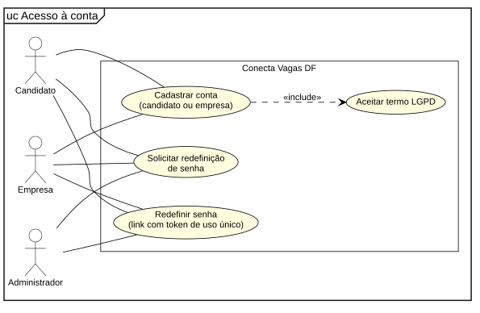
Fonte: Autoria própria (2026).
| Identificação: UC02 | |
| Nome: Cadastrar conta | |
| Atores: Visitante | |
| Pré-condições: O visitante não deverá estar logado. | |
| Pós-condições: A conta e o perfil são criados e o usuário entra no sistema. | |
| Fluxo principal | |
| Sequência típica de eventos | |
| Ator | Sistema |
| 1. O ator acessa a opção "Criar conta" no menu principal; | 2. O sistema exibe o formulário de cadastro; |
| 3. O ator escolhe o tipo (candidato ou empresa), preenche nome, e-mail, senha e telefone e marca o aceite do termo de privacidade; | |
| 4. O ator clica no botão "Cadastrar"; | 5. O sistema valida os dados e grava o usuário e o perfil na mesma transação; |
| 6. O sistema emite a mensagem "Cadastro realizado com sucesso!" e abre o perfil. | |
| Fluxo alternativo | |
| Sequência típica de eventos | |
| Ator | Sistema |
| 5.1. O sistema verifica que o e-mail já está cadastrado e emite a mensagem "Este e-mail já está cadastrado. Faça login ou use outro e-mail."; | |
| 5.2. O sistema verifica campos inválidos (e-mail, senha com menos de 6 ou mais de 72 caracteres ou termo não aceito), informa quais devem ser corrigidos e retorna ao passo 2. | |
| Identificação: UC03 | |
| Nome: Recuperar senha | |
| Atores: Visitante | |
| Pré-condições: O ator deverá possuir conta cadastrada. | |
| Pós-condições: A senha é alterada, os links pendentes deixam de valer e as sessões abertas são encerradas. | |
| Fluxo principal | |
| Sequência típica de eventos | |
| Ator | Sistema |
| 1. O ator clica em "Esqueci minha senha" e informa o e-mail; | 2. O sistema gera um link com token válido por 30 minutos (no banco fica só o hash do token) e exibe a mensagem de confirmação, sem revelar se o e-mail existe; no modo de demonstração, o link aparece na tela; |
| 3. O ator acessa o link e informa a nova senha; | 4. O sistema valida o token e a senha; |
| 5. O sistema altera a senha e emite a mensagem "Senha alterada com sucesso. Entre com a nova senha." | |
| Fluxo alternativo | |
| Sequência típica de eventos | |
| Ator | Sistema |
| 2.1. Houve muitos pedidos seguidos; o sistema emite "Muitas tentativas. Aguarde alguns minutos e tente novamente."; | |
| 4.1. O sistema verifica que o link é inválido, já foi usado ou expirou e emite a mensagem "Link inválido, já utilizado ou expirado. Gere um novo." | |
Diagrama de caso de uso específico consultas públicas
Figura 4 – Caso de uso específico – consultas públicas
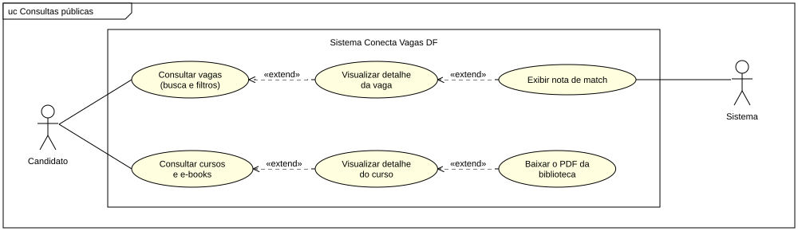
Fonte: Autoria própria (2026).
| Identificação: UC04 | |
| Nome: Consultar vagas | |
| Atores: Visitante e Candidato | |
| Pré-condições: Nenhuma. | |
| Pós-condições: O sistema exibe a lista de vagas abertas que atendem aos filtros. | |
| Fluxo principal | |
| Sequência típica de eventos | |
| Ator | Sistema |
| 1. O ator acessa a opção "Vagas" no menu principal; | 2. O sistema exibe as vagas abertas, com destaque para as vagas Premium; |
| 3. O ator informa palavra-chave e filtros (categoria, cidade, tipo, nível, modelo) e clica em "Buscar"; | 4. O sistema exibe as vagas encontradas, paginadas e, para o candidato, com a nota de match; |
| 5. O ator clica em uma vaga; | 6. O sistema exibe os detalhes da vaga, a explicação do match e cursos recomendados. |
| Fluxo alternativo | |
| Sequência típica de eventos | |
| Ator | Sistema |
| 4.1. O sistema não encontra vagas e exibe a mensagem informando que nenhuma vaga atende aos filtros. | |
| Identificação: UC05 | |
| Nome: Consultar cursos e e-books | |
| Atores: Visitante e Candidato | |
| Pré-condições: Nenhuma. | |
| Pós-condições: O sistema exibe a lista de cursos e e-books ativos. | |
| Fluxo principal | |
| Sequência típica de eventos | |
| Ator | Sistema |
| 1. O ator acessa a opção "Cursos" no menu principal; | 2. O sistema exibe os cursos, e-books e vídeos ativos; |
| 3. O ator aplica filtros (categoria, modalidade, nível, gratuito); | 4. O sistema exibe os conteúdos encontrados; |
| 5. O ator clica em um curso ou e-book; | 6. O sistema exibe os detalhes, o botão "Baixar" (e-book guardado na biblioteca) ou "Acessar" (conteúdo em outro site) e vagas relacionadas. |
| Fluxo alternativo | |
| Sequência típica de eventos | |
| Ator | Sistema |
| 4.1. O sistema não encontra cursos e informa que nenhum conteúdo atende aos filtros. | |
| Fluxo alternativo — baixar da biblioteca | |
| Sequência típica de eventos | |
| Ator | Sistema |
| 6.1. O ator clica em "Baixar"; | 6.2. O sistema entrega o PDF guardado na biblioteca da plataforma, com o crédito da fonte original. |
Diagrama de caso de uso específico perfil do candidato
Figura 5 – Caso de uso específico – perfil do candidato
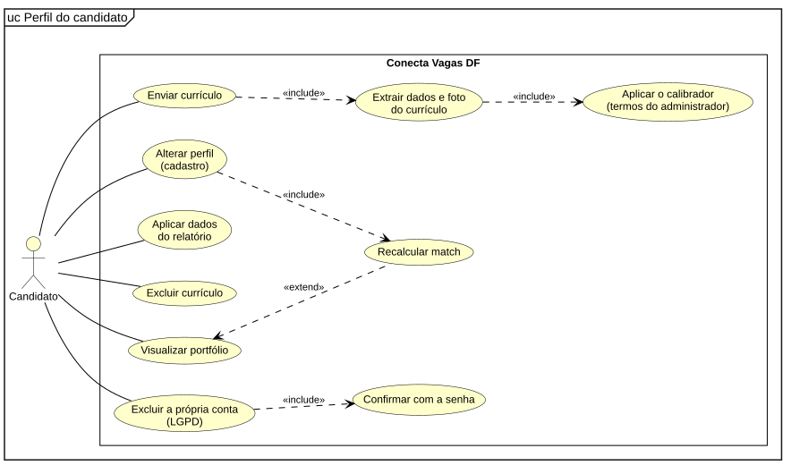
Fonte: Autoria própria (2026).
| Identificação: UC06 | |
| Nome: Alterar perfil do candidato | |
| Atores: Candidato | |
| Pré-condições: O ator deverá estar logado como candidato. | |
| Pós-condições: O perfil é salvo e o match é recalculado. | |
| Fluxo principal | |
| Sequência típica de eventos | |
| Ator | Sistema |
| 1. O ator acessa a aba "Meu perfil"; | 2. O sistema exibe o formulário preenchido com os dados atuais; |
| 3. O ator altera os dados e clica em "Salvar"; | 4. O sistema valida os dados (UF, CNH, foto); |
| 5. O sistema grava o perfil, recalcula o match e emite a mensagem "Cadastro atualizado. Seu portfólio e o match já foram atualizados." | |
| Fluxo alternativo | |
| Sequência típica de eventos | |
| Ator | Sistema |
| 4.1. O sistema verifica dados inválidos (ex.: "UF inválida. Use a sigla com 2 letras (ex.: DF)." ou "Foto inválida: use JPG, PNG ou WEBP de até 3 MB.") e retorna ao passo 2; | |
| 5.1. Faltando dados obrigatórios do portfólio, o sistema emite "Cadastro salvo. Para liberar o Portfólio, falta: ..." | |
| Identificação: UC07 | |
| Nome: Enviar currículo (extração) | |
| Atores: Candidato | |
| Pré-condições: O ator deverá estar logado como candidato. | |
| Pós-condições: O currículo é gravado, o perfil é preenchido e o relatório da extração é exibido. | |
| Fluxo principal | |
| Sequência típica de eventos | |
| Ator | Sistema |
| 1. O ator seleciona o arquivo do currículo e clica em "Enviar"; | 2. O sistema valida tamanho (até 10 MB), extensão e conteúdo do arquivo; |
| 3. O sistema lê o texto do arquivo (PDF, DOCX ou DOC), extrai os dados (as linhas soltas do começo seguem os termos do calibrador) e procura a foto do candidato; | |
| 4. O sistema aplica os dados no perfil e recalcula o match; | |
| 5. O sistema exibe o relatório da extração e a mensagem "Currículo lido: N dado(s) aplicado(s) ao perfil e o portfólio foi montado..." | |
| 6. O ator marca, no relatório, os dados que deseja substituir e clica em "Aplicar"; | 7. O sistema aplica as escolhas e recalcula o match. |
| Fluxo alternativo | |
| Sequência típica de eventos | |
| Ator | Sistema |
| 2.1. O arquivo é maior que 10 MB ou de formato não aceito; o sistema emite "Envie o currículo em PDF, DOC ou DOCX." (ou a mensagem de tamanho) e retorna ao passo 1; | |
| 3.1. O sistema não consegue ler o texto (imagem escaneada), salva o currículo e orienta o preenchimento manual do perfil; | |
| 3.2. O perfil já tem foto; a foto encontrada no currículo aparece no relatório para o ator escolher se troca. | |
| Identificação: UC08 | |
| Nome: Visualizar portfólio e match | |
| Atores: Candidato | |
| Pré-condições: O cadastro do candidato deverá estar validado. | |
| Pós-condições: O portfólio e as notas de match são exibidos. | |
| Fluxo principal | |
| Sequência típica de eventos | |
| Ator | Sistema |
| 1. O ator acessa a aba "Portfólio"; | 2. O sistema monta o portfólio (linha do tempo, formação, links) e lista as vagas com a nota de match; |
| 3. O ator clica em "Por que essa nota?"; | 4. O sistema exibe competências atendidas e faltantes, cargo, localização, nível e cursos recomendados. |
| Fluxo alternativo | |
| Sequência típica de eventos | |
| Ator | Sistema |
| 2.1. O cadastro está incompleto; o sistema emite "Complete o cadastro para liberar o seu portfólio. Falta: ..." e abre o perfil. | |
| Identificação: UC19 | |
| Nome: Excluir a própria conta (LGPD) | |
| Atores: Candidato | |
| Pré-condições: O ator deverá estar logado como candidato. | |
| Pós-condições: A conta e todos os dados do candidato são removidos e a sessão é encerrada. | |
| Fluxo principal | |
| Sequência típica de eventos | |
| Ator | Sistema |
| 1. O ator acessa "Meu perfil → Seus dados" e clica em "Excluir minha conta"; | 2. O sistema explica o que será apagado e pede a senha e a confirmação; |
| 3. O ator informa a senha, marca a caixa de confirmação e confirma a exclusão; | 4. O sistema confere a senha, com o mesmo limite de tentativas do login; |
| 5. O sistema apaga o perfil, os currículos e arquivos, a foto, as candidaturas, os matches e as tentativas de login, encerra a sessão e emite "Sua conta e todos os seus dados foram excluídos da plataforma." | |
| Fluxo alternativo | |
| Sequência típica de eventos | |
| Ator | Sistema |
| 4.1. A caixa de confirmação não foi marcada; o sistema emite "Marque a caixa de confirmação para excluir a conta." e retorna ao passo 2; | |
| 4.2. A senha está incorreta; o sistema emite "Senha incorreta: a conta não foi excluída."; | |
| 4.3. Houve muitas senhas erradas; o sistema emite "Muitas senhas erradas. Aguarde alguns minutos e tente de novo." | |
Diagrama de caso de uso específico candidatura
Figura 6 – Caso de uso específico – candidatura
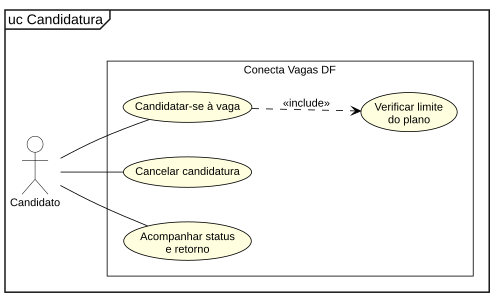
Fonte: Autoria própria (2026).
| Identificação: UC09.1 | |
| Nome: Candidatar-se à vaga | |
| Atores: Candidato | |
| Pré-condições: O ator deverá estar logado, possuir currículo enviado e a vaga deverá estar aberta. | |
| Pós-condições: A candidatura é registrada com status "enviada". | |
| Fluxo principal | |
| Sequência típica de eventos | |
| Ator | Sistema |
| 1. O ator acessa a vaga e clica em "Candidatar-se"; | 2. O sistema verifica o limite do plano e exibe o formulário; |
| 3. O ator escolhe o currículo, escreve a carta de apresentação (opcional) e clica em "Enviar"; | 4. O sistema valida o currículo e grava a candidatura respeitando o limite; |
| 5. O sistema emite a mensagem "Candidatura enviada com sucesso! Acompanhe o status no seu perfil." | |
| Fluxo alternativo | |
| Sequência típica de eventos | |
| Ator | Sistema |
| 2.1. O ator já se candidatou; o sistema emite "Você já se candidatou a esta vaga."; | |
| 2.2. A vaga foi encerrada; o sistema emite "Esta vaga não está mais recebendo candidaturas."; | |
| 4.1. O limite de 3 candidaturas ativas do plano gratuito foi atingido; o sistema emite a mensagem e direciona para a página de planos. | |
| Identificação: UC09.2 | |
| Nome: Cancelar candidatura | |
| Atores: Candidato | |
| Pré-condições: A candidatura deverá estar com status "enviada". | |
| Pós-condições: A candidatura passa ao status "cancelada". | |
| Fluxo principal | |
| Sequência típica de eventos | |
| Ator | Sistema |
| 1. O ator acessa "Minhas candidaturas" no perfil; | 2. O sistema exibe as candidaturas e seus status; |
| 3. O ator clica em "Cancelar"; | 4. O sistema emite a mensagem "Deseja realmente cancelar?"; |
| 5. O ator clica em "Confirmar"; | 6. O sistema cancela e emite a mensagem "Candidatura cancelada." |
| Fluxo alternativo | |
| Sequência típica de eventos | |
| Ator | Sistema |
| 5.1. O ator não confirma o cancelamento; | 5.2. O sistema retorna ao passo 2. |
| 6.1. A candidatura já está em etapa avançada; o sistema emite "Não foi possível cancelar: a candidatura já está em uma etapa avançada." | |
Diagrama de caso de uso específico manter vaga
Figura 7 – Caso de uso específico – manter vaga
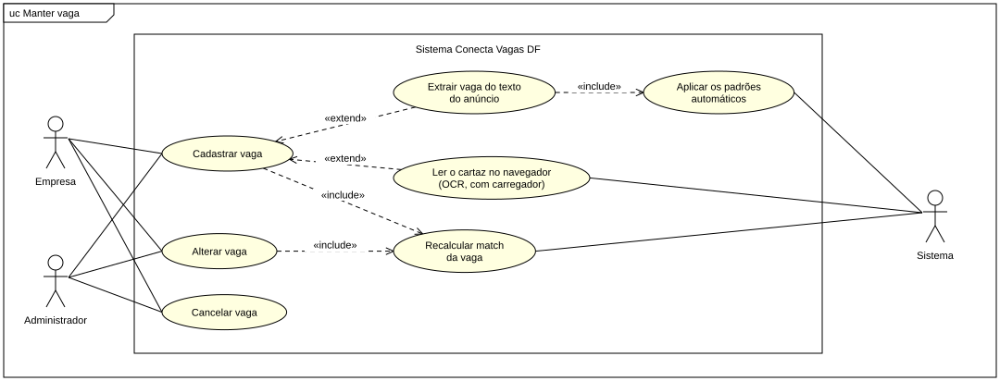
Fonte: Autoria própria (2026).
| Identificação: UC11.1 | |
| Nome: Cadastrar vaga | |
| Atores: Empresa e Administrador | |
| Pré-condições: O ator deverá estar logado; a empresa deverá ter o perfil preenchido. | |
| Pós-condições: A vaga é publicada e o match é calculado com os candidatos. | |
| Fluxo principal | |
| Sequência típica de eventos | |
| Ator | Sistema |
| 1. O ator acessa a aba "Vagas" no painel; | 2. O sistema exibe o formulário de cadastro e a lista de vagas e prepara o leitor de cartaz no navegador (carregador amarelo enquanto carrega, azul quando está pronto); |
| 3. O ator cola o texto do anúncio ou escolhe a imagem do cartaz e clica em "Extrair"; | 4. O sistema lê o cartaz no próprio navegador (carregador amarelo com a porcentagem), envia o texto lido ao servidor, extrai título, empresa, salário, cidade, tipo, nível, requisitos, benefícios e contato, aplica o calibrador e preenche o formulário, com o relatório da extração e os "Ajustes do calibrador"; |
| 5. O ator revisa os dados e clica em "Publicar"; | 6. O sistema valida os dados, verifica vaga duplicada e o limite do plano; |
| 7. O sistema grava a vaga, calcula o match e emite "Vaga publicada! Match calculado com N candidato(s)." | |
| Fluxo alternativo | |
| Sequência típica de eventos | |
| Ator | Sistema |
| 3.1. O ator clica em "Extrair" sem texto e sem cartaz; o sistema emite "Cole o texto do anúncio (ou envie o cartaz) antes de extrair." e não gera relatório; | |
| 3.2. O cartaz é inválido; o sistema emite "Cartaz inválido: envie JPG, PNG ou WEBP de até 8 MB."; | |
| 6.1. O sistema encontra campos inválidos (título vazio, salário máximo menor que o mínimo, data expirada) e informa quais corrigir; | |
| 6.2. O limite de 2 vagas ativas do plano gratuito foi atingido; o sistema emite a mensagem e direciona para os planos; | |
| 6.3. Existe vaga aberta igual; o sistema pede a confirmação "publicar mesmo assim". | |
| Identificação: UC11.2 | |
| Nome: Alterar vaga | |
| Atores: Empresa e Administrador | |
| Pré-condições: O ator deverá pesquisar a vaga; a empresa só altera as próprias vagas. | |
| Pós-condições: O sistema retornará à tela com a lista de vagas. | |
| Fluxo principal | |
| Sequência típica de eventos | |
| Ator | Sistema |
| 1. O ator clica no botão "Editar"; | 2. O sistema exibe os dados dentro de um formulário preenchido; |
| 3. O ator, após editar, clica no botão "Salvar"; | 4. O sistema valida os dados inseridos; |
| 5. O sistema grava, recalcula o match e emite a mensagem "Vaga atualizada." | |
| Fluxo alternativo | |
| Sequência típica de eventos | |
| Ator | Sistema |
| 2.1. A vaga não pertence à empresa; o sistema nega o acesso (erro 403); | |
| 4.1. O sistema informa que existem campos obrigatórios em branco ou inválidos. | |
| Identificação: UC11.3 | |
| Nome: Excluir vaga | |
| Atores: Empresa e Administrador | |
| Pré-condições: O ator deverá pesquisar a vaga. | |
| Pós-condições: O sistema retornará à tela com a lista de vagas. | |
| Fluxo principal | |
| Sequência típica de eventos | |
| Ator | Sistema |
| 1. O ator clica no botão "Excluir"; | 2. O sistema exibe os dados da vaga que o ator deseja excluir; |
| 3. O sistema emite a mensagem "Deseja realmente excluir?"; | |
| 4. O ator clica no botão "Confirmar"; | 5. O sistema exclui a vaga, suas candidaturas e matches e emite "Vaga excluída (candidaturas e matches dela também)." |
| Fluxo alternativo | |
| Sequência típica de eventos | |
| Ator | Sistema |
| 4.1. O ator cancela a exclusão; | 4.2. O sistema retorna ao passo 2 do fluxo principal. |
Diagrama de caso de uso específico área da empresa
Figura 8 – Caso de uso específico – área da empresa
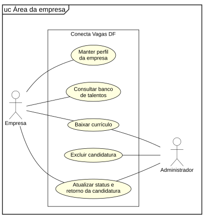
Fonte: Autoria própria (2026).
| Identificação: UC10 | |
| Nome: Manter perfil da empresa | |
| Atores: Empresa | |
| Pré-condições: O ator deverá estar logado como empresa. | |
| Pós-condições: Os dados da empresa são exibidos nas vagas. | |
| Fluxo principal | |
| Sequência típica de eventos | |
| Ator | Sistema |
| 1. O ator acessa a aba "Dados da empresa"; | 2. O sistema exibe o formulário preenchido; |
| 3. O ator preenche nome fantasia, CNPJ, setor, site, cidade, descrição e logotipo e clica em "Salvar"; | 4. O sistema valida os dados; |
| 5. O sistema grava e emite "Perfil da empresa atualizado. Esse nome aparece nas suas vagas." | |
| Fluxo alternativo | |
| Sequência típica de eventos | |
| Ator | Sistema |
| 4.1. O logotipo é inválido; o sistema emite "Logo inválida: use JPG, PNG ou WEBP de até 3 MB." e retorna ao passo 2. | |
| Identificação: UC12 | |
| Nome: Gerenciar candidaturas recebidas | |
| Atores: Empresa e Administrador | |
| Pré-condições: O ator deverá estar logado. | |
| Pós-condições: O candidato visualiza o novo status e o retorno no perfil. | |
| Fluxo principal | |
| Sequência típica de eventos | |
| Ator | Sistema |
| 1. O ator acessa a aba "Candidaturas"; | 2. O sistema exibe as candidaturas (VIP primeiro, depois maior match) com competências atendidas e faltantes; |
| 3. O ator filtra por vaga ou status e abre uma candidatura; | 4. O sistema exibe os dados do candidato e o link do currículo; |
| 5. O ator altera o status, escreve o retorno e clica em "Salvar"; | 6. O sistema grava e emite "Candidatura atualizada. O candidato vê o novo status e o retorno no perfil dele." |
| Fluxo alternativo | |
| Sequência típica de eventos | |
| Ator | Sistema |
| 5.1. O administrador clica em "Excluir"; | 5.2. O sistema exclui e emite "Candidatura excluída."; |
| 6.1. A candidatura é de outra empresa ou foi cancelada; o sistema emite "Não foi possível atualizar..." | |
| Identificação: UC13 | |
| Nome: Consultar banco de talentos | |
| Atores: Empresa e Administrador | |
| Pré-condições: O ator deverá estar logado. | |
| Pós-condições: O sistema exibe os perfis públicos encontrados. | |
| Fluxo principal | |
| Sequência típica de eventos | |
| Ator | Sistema |
| 1. O ator acessa a aba "Banco de talentos"; | 2. O sistema exibe os perfis públicos de candidatos; |
| 3. O ator informa termo e cidade e clica em "Buscar"; | 4. O sistema exibe os perfis encontrados, com acesso ao portfólio. |
| Fluxo alternativo | |
| Sequência típica de eventos | |
| Ator | Sistema |
| 4.1. Empresa sem plano Premium visualiza o banco de talentos de forma limitada (nome e contato ocultos), com convite para assinar o plano. | |
Diagrama de caso de uso específico planos
Figura 9 – Caso de uso específico – planos
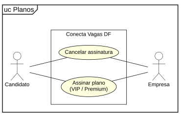
Fonte: Autoria própria (2026).
| Identificação: UC14.1 | |
| Nome: Assinar plano | |
| Atores: Candidato e Empresa | |
| Pré-condições: O ator deverá estar logado e sem assinatura ativa. | |
| Pós-condições: A assinatura fica ativa por 30 dias. | |
| Fluxo principal | |
| Sequência típica de eventos | |
| Ator | Sistema |
| 1. O ator acessa a página "Planos"; | 2. O sistema exibe os planos gratuito e pago do seu tipo de conta; |
| 3. O ator clica em "Assinar"; | 4. O sistema verifica o tipo de conta e se já existe plano ativo; |
| 5. O sistema registra a assinatura (VIP R$ 9,90 ou Premium R$ 49,90, demonstrativos) e emite "Parabéns! ... ativada com sucesso por 30 dias." | |
| Fluxo alternativo | |
| Sequência típica de eventos | |
| Ator | Sistema |
| 4.1. O plano já está ativo; o sistema emite "Seu plano VIP já está ativo." ou "O plano Empresa Premium já está ativo." | |
| Identificação: UC14.2 | |
| Nome: Cancelar assinatura | |
| Atores: Candidato e Empresa | |
| Pré-condições: O ator deverá possuir assinatura ativa. | |
| Pós-condições: Os benefícios do plano são removidos. | |
| Fluxo principal | |
| Sequência típica de eventos | |
| Ator | Sistema |
| 1. O ator clica em "Cancelar assinatura"; | 2. O sistema emite a mensagem "Deseja realmente cancelar?"; |
| 3. O ator clica em "Confirmar"; | 4. O sistema cancela a assinatura, remove o destaque das vagas (empresa) e emite a confirmação. |
| Fluxo alternativo | |
| Sequência típica de eventos | |
| Ator | Sistema |
| 4.1. Não existe assinatura ativa; o sistema emite "Não existe uma assinatura ativa para cancelar." | |
Diagrama de caso de uso específico manter usuário
Figura 10 – Caso de uso específico – manter usuário
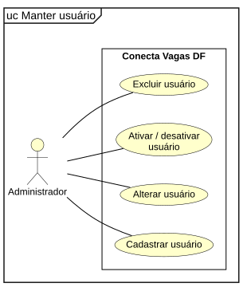
Fonte: Autoria própria (2026).
| Identificação: UC15.1 | |
| Nome: Cadastrar usuário | |
| Atores: Administrador | |
| Pré-condições: O administrador deverá estar logado. | |
| Pós-condições: O sistema retornará à tela com a lista de usuários. | |
| Fluxo principal | |
| Sequência típica de eventos | |
| Ator | Sistema |
| 1. O administrador acessa a aba "Usuários" no painel; | 2. O sistema exibe o formulário de cadastro e a lista; |
| 3. O administrador preenche nome, e-mail, senha, telefone, tipo e situação; | |
| 4. O administrador clica no botão "Salvar"; | 5. O sistema valida os dados; |
| 6. O sistema emite a mensagem "Usuário criado com perfil." | |
| Fluxo alternativo | |
| Sequência típica de eventos | |
| Ator | Sistema |
| 5.1. O sistema verifica que campos obrigatórios não foram preenchidos ou são inválidos; | |
| 5.2. O sistema informa quais campos devem ser corrigidos e retorna ao passo 2 do fluxo principal. | |
| Identificação: UC15.2 | |
| Nome: Alterar usuário | |
| Atores: Administrador | |
| Pré-condições: O administrador deverá pesquisar o usuário. | |
| Pós-condições: O sistema retornará à tela com a lista de usuários. | |
| Fluxo principal | |
| Sequência típica de eventos | |
| Ator | Sistema |
| 1. O administrador clica no botão "Editar"; | 2. O sistema exibe os dados dentro de um formulário preenchido; |
| 3. O administrador, após editar, clica no botão "Salvar"; | 4. O sistema valida os dados inseridos; |
| 5. O sistema emite a mensagem "Usuário atualizado." | |
| Fluxo alternativo | |
| Sequência típica de eventos | |
| Ator | Sistema |
| 4.1. O sistema impede rebaixar ou desativar o último administrador ativo e informa o motivo. | |
| Identificação: UC15.3 | |
| Nome: Excluir usuário | |
| Atores: Administrador | |
| Pré-condições: O administrador deverá pesquisar o usuário. | |
| Pós-condições: O usuário e todos os seus dados são removidos; os termos do calibrador que ele cadastrou ficam, sem o autor. | |
| Fluxo principal | |
| Sequência típica de eventos | |
| Ator | Sistema |
| 1. O administrador clica no botão "Excluir"; | 2. O sistema exibe os dados do usuário; |
| 3. O sistema emite a mensagem "Deseja realmente excluir?"; | |
| 4. O administrador clica no botão "Confirmar"; | 5. O sistema exclui a conta e emite "Usuário excluído (perfil, currículos, vagas e candidaturas foram removidos junto)." |
| Fluxo alternativo | |
| Sequência típica de eventos | |
| Ator | Sistema |
| 4.1. O administrador cancela a exclusão; | 4.2. O sistema retorna ao passo 2. |
| 5.1. O administrador tenta excluir a própria conta; o sistema emite "Você não pode excluir a própria conta."; | |
| 5.2. É o último administrador ativo; o sistema emite "É preciso manter pelo menos um administrador ativo." | |
| Identificação: UC15.4 | |
| Nome: Ativar / desativar usuário | |
| Atores: Administrador | |
| Pré-condições: O administrador deverá pesquisar o usuário. | |
| Pós-condições: A situação da conta é alterada; a conta desativada perde o acesso na hora. | |
| Fluxo principal | |
| Sequência típica de eventos | |
| Ator | Sistema |
| 1. O administrador clica em "Desativar" (ou "Ativar"); | 2. O sistema altera a situação e emite "Conta bloqueada: o login e a sessão aberta perdem o acesso." (ou "Conta ativada: o login volta a funcionar.") |
| Fluxo alternativo | |
| Sequência típica de eventos | |
| Ator | Sistema |
| 2.1. O sistema impede desativar a própria conta ou o último administrador ativo e informa o motivo. | |
Diagrama de caso de uso específico manter categoria
Figura 11 – Caso de uso específico – manter categoria
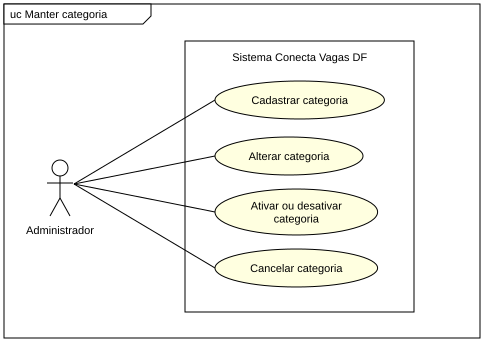
Fonte: Autoria própria (2026).
| Identificação: UC16.1 | |
| Nome: Cadastrar categoria | |
| Atores: Administrador | |
| Pré-condições: O administrador deverá estar logado. | |
| Pós-condições: A categoria fica disponível para vagas ou cursos. | |
| Fluxo principal | |
| Sequência típica de eventos | |
| Ator | Sistema |
| 1. O administrador acessa a aba "Categorias"; | 2. O sistema exibe o formulário e a lista; |
| 3. O administrador informa nome e tipo (vaga ou curso) e clica em "Salvar"; | 4. O sistema valida os dados; |
| 5. O sistema emite a mensagem "Categoria salva." | |
| Fluxo alternativo | |
| Sequência típica de eventos | |
| Ator | Sistema |
| 4.1. O nome está vazio ou já existe para o mesmo tipo; o sistema informa o erro e retorna ao passo 2. | |
| Identificação: UC16.2 | |
| Nome: Alterar categoria | |
| Atores: Administrador | |
| Pré-condições: O administrador deverá selecionar a categoria. | |
| Pós-condições: O sistema retornará à lista de categorias. | |
| Fluxo principal | |
| Sequência típica de eventos | |
| Ator | Sistema |
| 1. O administrador clica em "Editar"; | 2. O sistema exibe o formulário preenchido; |
| 3. O administrador altera e clica em "Salvar"; | 4. O sistema valida e emite "Categoria salva." |
| Fluxo alternativo | |
| Sequência típica de eventos | |
| Ator | Sistema |
| 4.1. A categoria não existe mais; o sistema emite "Categoria não encontrada (pode ter sido excluída)." | |
| Identificação: UC16.3 | |
| Nome: Excluir categoria | |
| Atores: Administrador | |
| Pré-condições: O administrador deverá selecionar a categoria. | |
| Pós-condições: Vagas e cursos que a usavam ficam sem categoria. | |
| Fluxo principal | |
| Sequência típica de eventos | |
| Ator | Sistema |
| 1. O administrador clica em "Excluir"; | 2. O sistema emite "Deseja realmente excluir?"; |
| 3. O administrador clica em "Confirmar"; | 4. O sistema emite "Categoria excluída. Vagas e cursos que a usavam ficaram sem categoria." |
| Fluxo alternativo | |
| Sequência típica de eventos | |
| Ator | Sistema |
| 3.1. O administrador cancela a exclusão; | 3.2. O sistema retorna à lista. |
| Identificação: UC16.4 | |
| Nome: Ativar / desativar categoria | |
| Atores: Administrador | |
| Pré-condições: O administrador deverá selecionar a categoria. | |
| Pós-condições: A categoria sai (ou volta) dos filtros; os itens continuam com ela. | |
| Fluxo principal | |
| Sequência típica de eventos | |
| Ator | Sistema |
| 1. O administrador clica em "Desativar" (ou "Ativar"); | 2. O sistema emite "Categoria desativada: some dos filtros, mas os itens continuam com ela." (ou "Categoria ativada.") |
| Fluxo alternativo | |
| Sequência típica de eventos | |
| Ator | Sistema |
| 2.1. A categoria não existe mais; o sistema emite "Categoria não encontrada." | |
Diagrama de caso de uso específico manter curso/e-book
Figura 12 – Caso de uso específico – manter curso/e-book
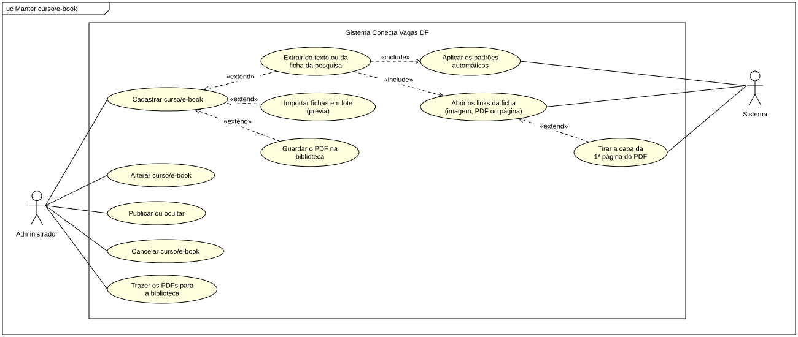
Fonte: Autoria própria (2026).
| Identificação: UC17.1 | |
| Nome: Cadastrar curso/e-book | |
| Atores: Administrador | |
| Pré-condições: O administrador deverá estar logado. | |
| Pós-condições: O conteúdo fica disponível na página de cursos; o PDF do e-book fica na biblioteca. | |
| Fluxo principal | |
| Sequência típica de eventos | |
| Ator | Sistema |
| 1. O administrador acessa a aba "Cursos e e-books"; | 2. O sistema exibe o formulário e a lista; |
| 3. O administrador cola o texto de divulgação ou a ficha da pesquisa e clica em "Extrair" (opcional); | 4. O sistema preenche título, instituição, link, PDF, carga horária, preço, modalidade, nível e categoria (a área e a instituição também podem vir do calibrador); |
| 5. O administrador revisa, envia o PDF do e-book (opcional) e clica em "Salvar"; | 6. O sistema valida, baixa a imagem e o PDF indicados, guarda o PDF na biblioteca com o crédito da fonte e emite "Conteúdo salvo." |
| Fluxo alternativo | |
| Sequência típica de eventos | |
| Ator | Sistema |
| 6.1. O sistema verifica campos obrigatórios em branco ou link inválido, informa quais corrigir e retorna ao passo 2; | |
| 6.2. Sem imagem, o conteúdo entra com a imagem padrão da plataforma e o sistema avisa para trocá-la depois em "Editar". | |
| Identificação: UC17.2 | |
| Nome: Alterar curso/e-book | |
| Atores: Administrador | |
| Pré-condições: O administrador deverá selecionar o conteúdo. | |
| Pós-condições: O sistema retornará à lista. | |
| Fluxo principal | |
| Sequência típica de eventos | |
| Ator | Sistema |
| 1. O administrador clica em "Editar"; | 2. O sistema exibe o formulário preenchido; |
| 3. O administrador altera e clica em "Salvar"; | 4. O sistema valida e emite "Conteúdo salvo." |
| Fluxo alternativo | |
| Sequência típica de eventos | |
| Ator | Sistema |
| 4.1. O sistema informa que existem campos obrigatórios em branco. | |
| Fluxo alternativo — publicar ou ocultar | |
| Sequência típica de eventos | |
| Ator | Sistema |
| 1.1. O administrador clica em "Ocultar" (ou "Publicar"); | 1.2. O sistema emite "Conteúdo ocultado: saiu da área pública." (ou "Conteúdo publicado: já aparece para os usuários.") |
| Identificação: UC17.3 | |
| Nome: Excluir curso/e-book | |
| Atores: Administrador | |
| Pré-condições: O administrador deverá selecionar o conteúdo. | |
| Pós-condições: O conteúdo deixa de ser exibido. | |
| Fluxo principal | |
| Sequência típica de eventos | |
| Ator | Sistema |
| 1. O administrador clica em "Excluir"; | 2. O sistema emite "Deseja realmente excluir?"; |
| 3. O administrador clica em "Confirmar"; | 4. O sistema emite "Conteúdo excluído." |
| Fluxo alternativo | |
| Sequência típica de eventos | |
| Ator | Sistema |
| 3.1. O administrador cancela a exclusão; | 3.2. O sistema retorna à lista. |
| Identificação: UC17.4 | |
| Nome: Importar fichas em lote | |
| Atores: Administrador | |
| Pré-condições: O administrador deverá estar logado. | |
| Pós-condições: Os conteúdos marcados na prévia são cadastrados e publicados. | |
| Fluxo principal | |
| Sequência típica de eventos | |
| Ator | Sistema |
| 1. O administrador cola várias fichas separadas por "---" e clica em "Extrair"; | 2. O sistema lê as fichas e emite "N fichas lidas. Confira a prévia e cadastre as marcadas."; |
| 3. O administrador confere a prévia, desmarca o que não quer e clica em "Cadastrar"; | 4. O sistema baixa imagens e PDFs, cadastra e publica os marcados e emite "N conteúdo(s) cadastrado(s) e publicado(s); M com o PDF na biblioteca (botão "Baixar")..." |
| Fluxo alternativo | |
| Sequência típica de eventos | |
| Ator | Sistema |
| 3.1. O administrador clica em "Cancelar"; | 3.2. O sistema descarta a prévia e retorna à lista. |
| Identificação: UC17.5 | |
| Nome: Trazer os PDFs para a biblioteca | |
| Atores: Administrador | |
| Pré-condições: O administrador deverá estar logado e o servidor deverá ter acesso à internet. | |
| Pós-condições: Os e-books encontrados passam a ter o botão "Baixar". | |
| Fluxo principal | |
| Sequência típica de eventos | |
| Ator | Sistema |
| 1. O administrador clica em "Trazer os PDFs para a biblioteca"; | 2. Para cada e-book que ainda abre em outro site, o sistema procura o PDF na página oficial e o baixa com segurança (endereço público, HTTPS verificado, até 150 MB); |
| 3. O sistema guarda os PDFs, credita a fonte original e emite "N PDF(s) guardado(s) na biblioteca: o botão desses e-books agora é "Baixar"." | |
| Fluxo alternativo | |
| Sequência típica de eventos | |
| Ator | Sistema |
| 2.1. O link não leva a um PDF público; o e-book continua com "Acessar" e o sistema orienta enviar o arquivo em "Editar". | |
Diagrama de caso de uso específico visualizar painel
Figura 13 – Caso de uso específico – visualizar painel
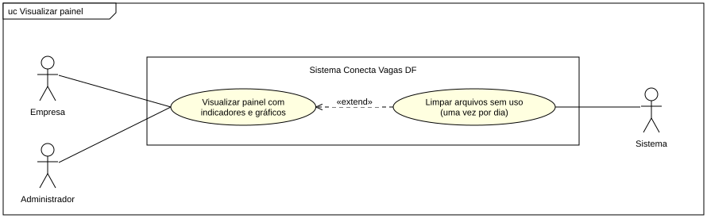
Fonte: Autoria própria (2026).
| Identificação: UC18 | |
| Nome: Visualizar painel | |
| Atores: Empresa e Administrador | |
| Pré-condições: O ator deverá estar logado. | |
| Pós-condições: O painel com indicadores é exibido. | |
| Fluxo principal | |
| Sequência típica de eventos | |
| Ator | Sistema |
| 1. O ator acessa o "Painel"; | 2. O sistema calcula e exibe indicadores (vagas, candidaturas por status, candidaturas por dia, match médio, usuários por tipo) e gráficos; |
| 3. O ator clica em um indicador; | 4. O sistema direciona para a lista correspondente. |
| Fluxo alternativo | |
| Sequência típica de eventos | |
| Ator | Sistema |
| 2.1. Para a empresa, o sistema exibe somente os dados das próprias vagas; | |
| 2.2. Para o administrador, no máximo uma vez por dia, o sistema limpa arquivos enviados que ficaram sem uso. | |
Diagrama de caso de uso específico gerenciar assinaturas
Figura 14 – Caso de uso específico – gerenciar assinaturas
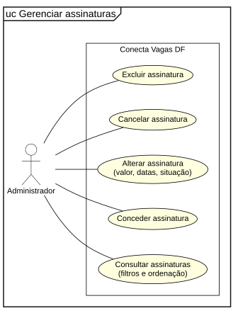
Fonte: Autoria própria (2026).
| Identificação: UC20 | |
| Nome: Gerenciar assinaturas | |
| Atores: Administrador | |
| Pré-condições: O administrador deverá estar logado. | |
| Pós-condições: A assinatura é concedida, alterada, cancelada ou excluída do histórico. | |
| Fluxo principal | |
| Sequência típica de eventos | |
| Ator | Sistema |
| 1. O administrador acessa a aba "Assinaturas"; | 2. O sistema exibe a lista com o resumo por plano, filtros (plano, situação, busca) e ordenação; |
| 3. O administrador escolhe a conta, a duração em dias e o valor e clica em "Conceder"; | 4. O sistema valida e emite "Empresa Premium (ou Candidato VIP) concedido a NOME por N dias." |
| Fluxo alternativo | |
| Sequência típica de eventos | |
| Ator | Sistema |
| 4.1. A conta está bloqueada; o sistema emite "Esta conta está bloqueada: ative-a antes de conceder um plano."; | |
| 4.2. A duração está fora de 1 a 3660 dias ou o valor é inválido; o sistema informa o erro. | |
| Fluxo alternativo — alterar | |
| Sequência típica de eventos | |
| Ator | Sistema |
| 3.1. O administrador clica em "Editar", altera valor, datas ou situação e salva; | 3.2. O sistema valida e emite "Assinatura atualizada." |
| Fluxo alternativo — cancelar | |
| Sequência típica de eventos | |
| Ator | Sistema |
| 3.3. O administrador clica em "Cancelar"; | 3.4. O sistema emite "Assinatura cancelada: a conta voltou ao plano gratuito (o histórico fica guardado)." |
| Fluxo alternativo — excluir | |
| Sequência típica de eventos | |
| Ator | Sistema |
| 3.5. O administrador clica em "Excluir"; | 3.6. O sistema emite "Assinatura excluída do histórico." |
Diagrama de caso de uso específico calibrar as máquinas de extração
Figura 15 – Caso de uso específico – calibrar as máquinas de extração
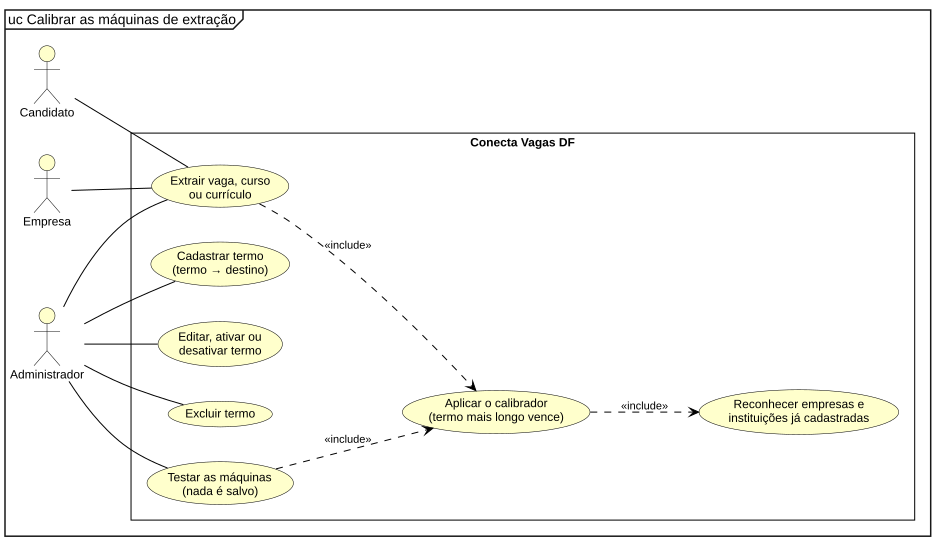
Fonte: Autoria própria (2026).
| Identificação: UC21 | |
| Nome: Calibrar as máquinas de extração | |
| Atores: Administrador (os ajustes valem nas extrações de Candidato, Empresa e Administrador) | |
| Pré-condições: O administrador deverá estar logado. | |
| Pós-condições: O termo fica gravado e já vale na próxima extração. | |
| Fluxo principal | |
| Sequência típica de eventos | |
| Ator | Sistema |
| 1. O administrador acessa a aba "Calibrador" do painel (admin/pages/calibrador.php); | 2. O sistema exibe como o calibrador funciona, o formulário de novo termo, o "Testar as máquinas", a lista de termos calibrados e os nomes conhecidos (empresas e instituições já cadastradas); |
| 3. O administrador informa o termo (ex.: "Uniforme"), escolhe para onde ele vai (ex.: Vaga — Benefícios) e clica em "Salvar termo"; | 4. O sistema valida o destino, grava o termo e emite "Termo salvo: já vale na próxima extração." |
| Fluxo alternativo — testar as máquinas | |
| Sequência típica de eventos | |
| Ator | Sistema |
| 4.1. O administrador escolhe a máquina (vaga, curso ou currículo), cola um texto e clica em "Testar"; | 4.2. O sistema roda a extração e exibe os campos e a lista "Ajustes do calibrador" (o que a regra dizia e qual termo decidiu), sem salvar nada. |
| Fluxo alternativo — termo repetido ou inválido | |
| Sequência típica de eventos | |
| Ator | Sistema |
| 4.3. O termo já existe nesse contexto; o sistema emite "Esse termo já está calibrado nesse contexto (vai para "X"). Edite o que já existe."; | |
| 4.4. O termo está vazio ou o destino não foi escolhido; o sistema informa o que falta e retorna ao passo 3. | |
| Fluxo alternativo — editar, desativar ou excluir | |
| Sequência típica de eventos | |
| Ator | Sistema |
| 4.5. O administrador clica em "Editar", altera o termo ou o destino e salva; | 4.6. O sistema grava a alteração e emite "Termo salvo: já vale na próxima extração." |
| 4.7. O administrador desliga a chave "Ativo" do termo; | 4.8. O sistema emite "Termo desativado: fica guardado, mas a extração não usa." |
| 4.9. O administrador clica em "Excluir" e confirma; | 4.10. O sistema emite "Termo excluído: a extração volta a seguir só a regra nesse caso." |
13.3. Diagrama de Classes
O diagrama de classes é usado quando está sendo desenvolvido um modelo de sistema orientado a objetos, para mostrar as classes do sistema, seus atributos, métodos e as associações entre elas. As classes deste diagrama representam os objetos do domínio do Conecta Vagas DF, implementados como DTOs e classes de acesso a dados (DAO); a classe TermoCalibrado representa os termos do calibrador das máquinas de extração, cadastrados por um usuário administrador.
Figura 16 – Diagrama de Classes do domínio
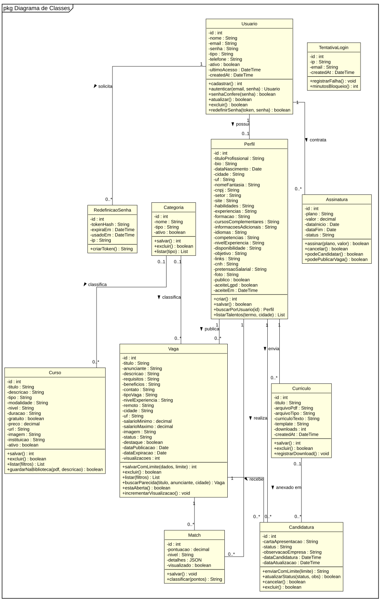
Fonte: Autoria própria (2026).
13.4. Diagramas de Sequência
Os diagramas de sequência mostram a troca de mensagens entre o ator e os objetos do sistema ao longo do tempo, seguindo o padrão Boundary (tela), Control (controlador ou serviço) e Entity (classe de acesso a dados). Os diagramas mais largos estão em páginas na horizontal.
Figura 17 – Diagrama de Sequência realizar login
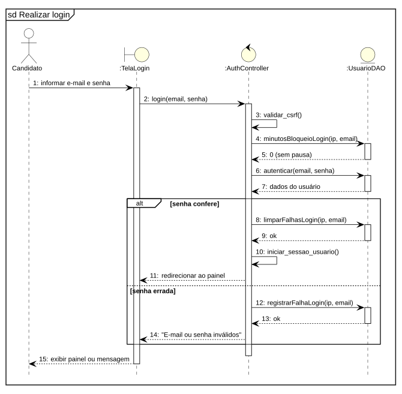
Fonte: Autoria própria (2026).
Figura 18 – Diagrama de Sequência cadastrar conta
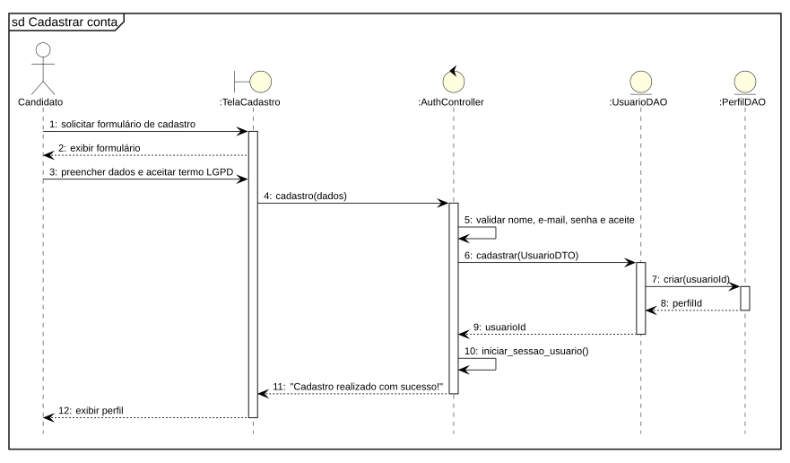
Fonte: Autoria própria (2026).
Figura 19 – Diagrama de Sequência pesquisar vagas
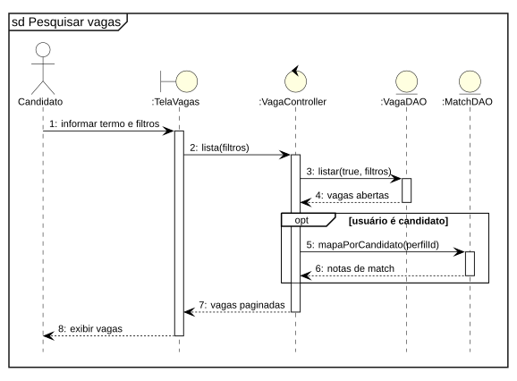
Fonte: Autoria própria (2026).
Figura 20 – Diagrama de Sequência enviar currículo (extração e match)
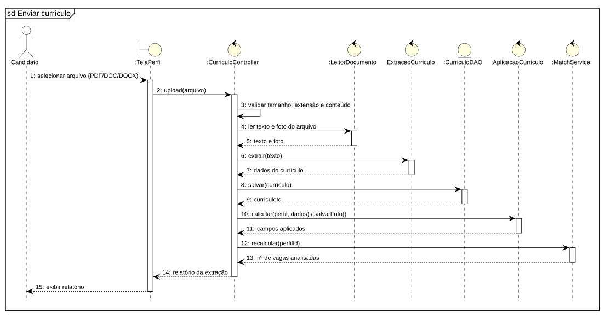
Fonte: Autoria própria (2026).
Figura 21 – Diagrama de Sequência candidatar-se à vaga
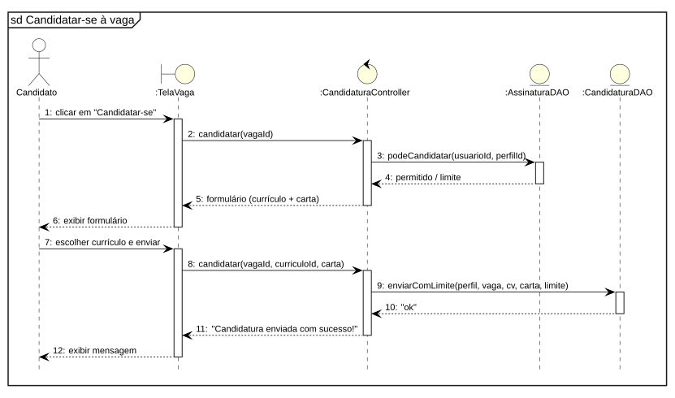
Fonte: Autoria própria (2026).
Figura 22 – Diagrama de Sequência cancelar candidatura
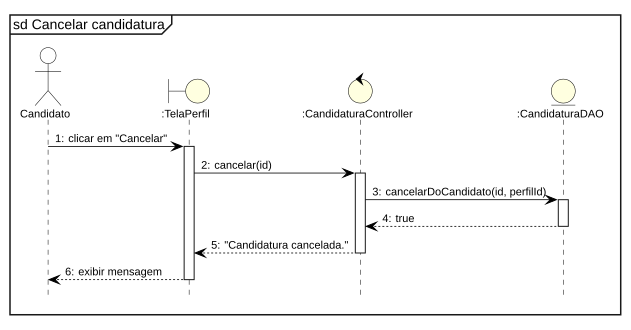
Fonte: Autoria própria (2026).
Figura 23 – Diagrama de Sequência cadastrar vaga (leitura do cartaz no navegador e extração)
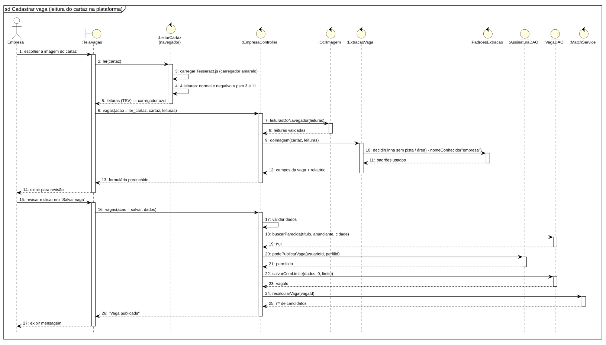
Fonte: Autoria própria (2026).
Figura 24 – Diagrama de Sequência alterar vaga
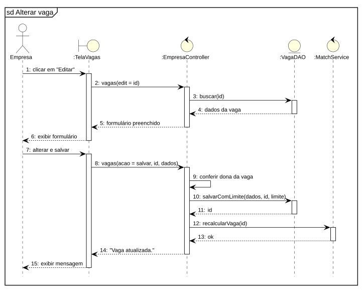
Fonte: Autoria própria (2026).
Figura 25 – Diagrama de Sequência excluir vaga
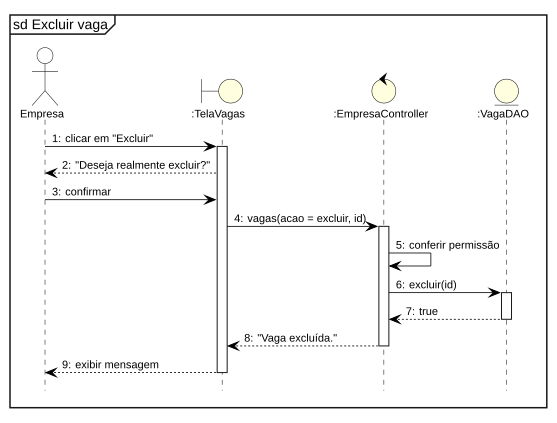
Fonte: Autoria própria (2026).
Figura 26 – Diagrama de Sequência atualizar status da candidatura
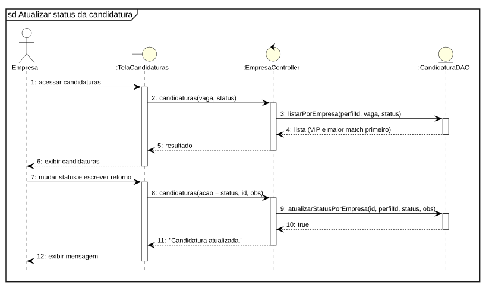
Fonte: Autoria própria (2026).
Figura 27 – Diagrama de Sequência assinar plano
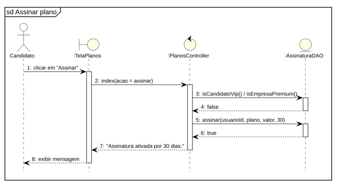
Fonte: Autoria própria (2026).
Figura 28 – Diagrama de Sequência manter usuário
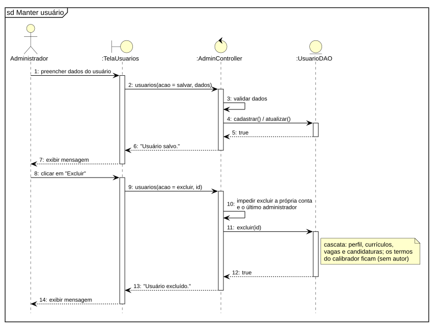
Fonte: Autoria própria (2026).
Figura 29 – Diagrama de Sequência excluir a própria conta (LGPD)
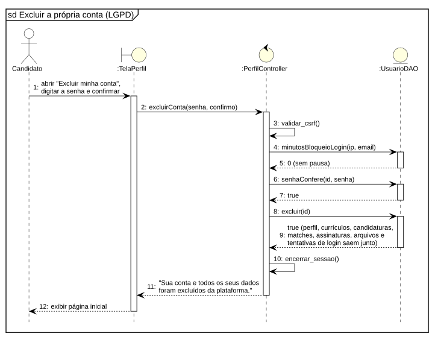
Fonte: Autoria própria (2026).
Figura 30 – Diagrama de Sequência trazer os PDFs para a biblioteca
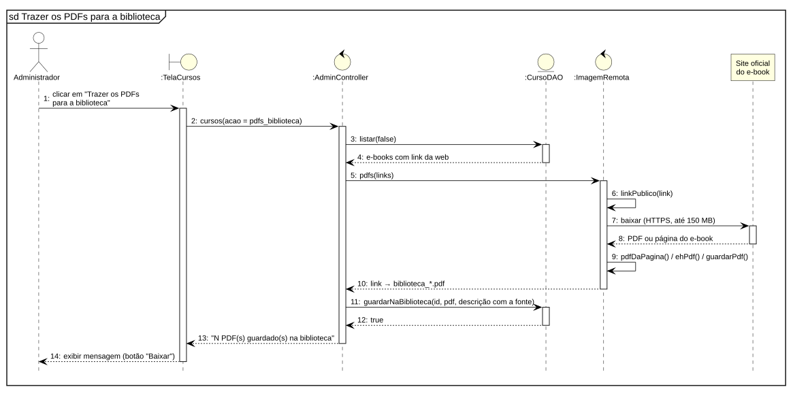
Fonte: Autoria própria (2026).
Figura 31 – Diagrama de Sequência calibrar as máquinas de extração
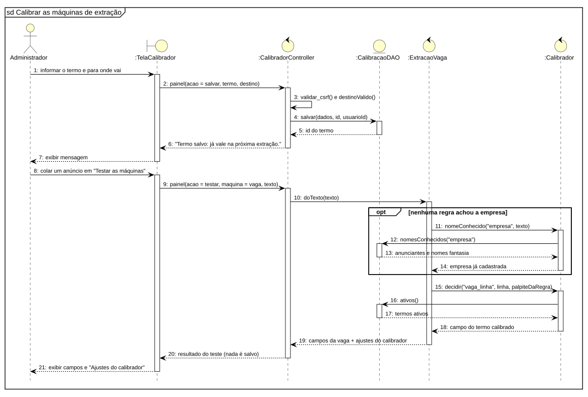
Fonte: Autoria própria (2026).
13.5. Modelo Entidade-Relacionamento
O modelo de dados foi feito em duas etapas. O modelo conceitual (Figura 32) representa os dados do sistema independentemente do SGBD, na notação de Chen adaptada por Heuser: entidades em retângulos, relacionamentos em losangos, atributos em círculos (identificador preenchido) e cardinalidades mínima e máxima. PERFIL é especializado de forma exclusiva e total em CANDIDATO e EMPRESA, CANDIDATURA é uma entidade associativa entre CANDIDATO e VAGA e COMBINA guarda a nota do match entre os dois. Na área tracejada fica o calibrador das máquinas de extração: TERMO CALIBRADO se liga ao USUÁRIO que o cadastrou pelo relacionamento CADASTRA, com cardinalidade (0,1) do lado do usuário, porque o termo continua valendo se a conta for excluída. TENTATIVA DE LOGIN não se relaciona com outras entidades: é o controle de força-bruta por e-mail e IP.
O modelo lógico (Figura 33) transforma o modelo conceitual nas 12 tabelas do MySQL/MariaDB e foi gerado a partir do arquivo database/schema.sql, para mostrar exatamente as colunas e os tipos do banco. A especialização de PERFIL foi implementada em uma única tabela (perfis), diferenciada pelo tipo do usuário; o relacionamento COMBINA virou a tabela matches e a entidade associativa CANDIDATURA virou a tabela candidaturas, ambas com chave única (perfil_candidato_id, vaga_id). As chaves estrangeiras usam ON DELETE CASCADE, exceto na tabela calibracao_extracao, que usa ON DELETE SET NULL: o termo calibrado só perde o autor, e quem exclui a própria conta leva junto todos os seus dados pessoais, conforme a LGPD.
13.5.1. Modelo Conceitual
Diagrama Entidade-Relacionamento na notação de Chen/Heuser, com a área do calibrador das máquinas de extração tracejada.
Figura 32 – Modelo Conceitual (desenhado a lápis)
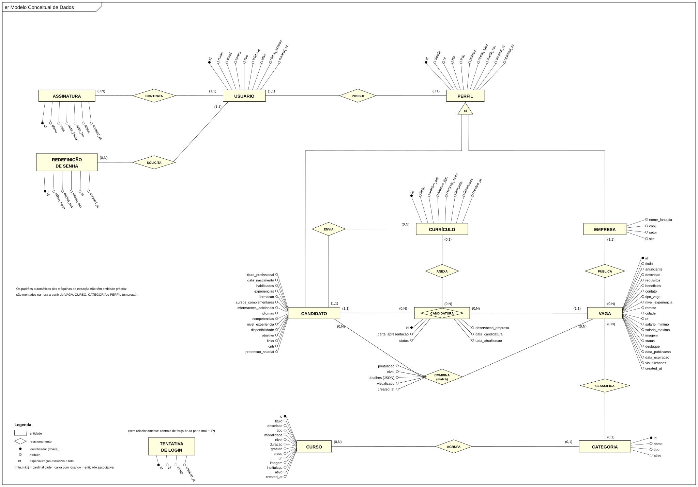
Fonte: Autoria própria (2026).
13.5.2. Modelo Lógico (Diagrama Entidade-Relacionamento)
Tabelas, colunas, tipos e chaves do banco tcc_final (PK = chave primária, FK = chave estrangeira, NN = obrigatório, UQ = único).
Figura 33 – Modelo Lógico — Diagrama Entidade-Relacionamento
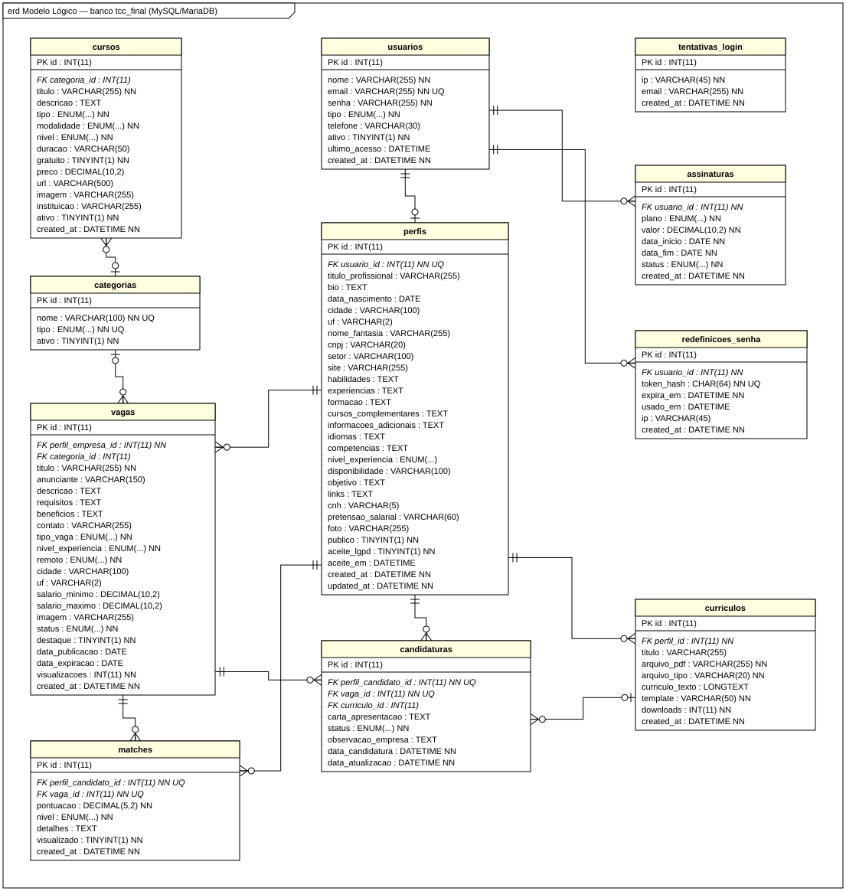
Fonte: Autoria própria (2026).
13.6. Dicionário de Dados
O dicionário de dados descreve cada atributo das 12 tabelas do banco tcc_final (MySQL/MariaDB, InnoDB, utf8mb4), todas criadas pelo arquivo database/schema.sql.
Tabela usuarios
Contas de acesso (candidato, empresa ou administrador).
| Atributo | Descrição | Tipo | Tamanho | Formato | Restrições |
| id | Código que identifica o registro no banco | INT | 11 | Número | PK, NOT NULL, AUTO_INCREMENT |
| nome | Nome do usuário ou da empresa | VARCHAR | 255 | Texto | NOT NULL |
| E-mail usado no login | VARCHAR | 255 | Texto | NOT NULL, UNIQUE | |
| senha | Hash bcrypt da senha | VARCHAR | 255 | Texto | NOT NULL |
| tipo | Tipo de conta | ENUM | — | 'admin', 'candidato', 'empresa' | NOT NULL, DEFAULT 'candidato' |
| telefone | Telefone de contato | VARCHAR | 30 | (00) 00000-0000 | NULL |
| ativo | Indica se a conta está ativa | TINYINT | 1 | 0 ou 1 | NOT NULL, DEFAULT 1 |
| ultimo_acesso | Data e hora do último acesso | DATETIME | — | dd/mm/aaaa hh:mm | NULL |
| created_at | Data e hora de criação do registro | DATETIME | — | dd/mm/aaaa hh:mm | NOT NULL, DEFAULT CURRENT_TIMESTAMP |
Tabela perfis
Dados profissionais do candidato ou dados da empresa (1:1 com usuarios).
| Atributo | Descrição | Tipo | Tamanho | Formato | Restrições |
| id | Código que identifica o registro no banco | INT | 11 | Número | PK, NOT NULL, AUTO_INCREMENT |
| usuario_id | Código do usuário dono do perfil | INT | 11 | Número | FK → usuarios.id, NOT NULL, UNIQUE, ON DELETE CASCADE |
| titulo_profissional | Cargo ou título profissional do candidato | VARCHAR | 255 | Texto | NULL |
| bio | Resumo profissional ou descrição da empresa | TEXT | — | Texto | NULL |
| data_nascimento | Data de nascimento do candidato | DATE | — | dd/mm/aaaa | NULL |
| cidade | Cidade ou região administrativa | VARCHAR | 100 | Texto | DEFAULT 'Brasília' |
| uf | Sigla da unidade federativa | VARCHAR | 2 | AA | DEFAULT 'DF' |
| nome_fantasia | Nome fantasia da empresa | VARCHAR | 255 | Texto | NULL |
| cnpj | CNPJ da empresa | VARCHAR | 20 | 00.000.000/00 00-00 | NULL |
| setor | Setor de atuação da empresa | VARCHAR | 100 | Texto | NULL |
| site | Endereço do site da empresa | VARCHAR | 255 | URL | NULL |
| habilidades | Habilidades do candidato | TEXT | — | Texto | NULL |
| experiencias | Experiências profissionais | TEXT | — | Texto | NULL |
| formacao | Formação escolar e acadêmica | TEXT | — | Texto | NULL |
| cursos_complemen tares | Cursos complementares | TEXT | — | Texto | NULL |
| informacoes_adicio nais | Informações adicionais (PCD, disponibilidade etc.) | TEXT | — | Texto | NULL |
| idiomas | Idiomas e níveis | TEXT | — | Texto | NULL |
| competencias | Competências comportamentais e técnicas | TEXT | — | Texto | NULL |
| nivel_experiencia | Nível de experiência do candidato | ENUM | — | 'estagiario', 'junior', 'pleno', 'senior' | DEFAULT 'junior' |
| disponibilidade | Disponibilidade de horário ou mudança | VARCHAR | 100 | Texto | NULL |
| objetivo | Objetivo profissional | TEXT | — | Texto | NULL |
| links | Links (LinkedIn, GitHub, portfólio) | TEXT | — | URL | NULL |
| cnh | Categoria da CNH | VARCHAR | 5 | A, B, AB... | NULL |
| pretensao_salarial | Pretensão salarial | VARCHAR | 60 | Texto | NULL |
| foto | Caminho da foto ou logotipo | VARCHAR | 255 | Texto | NULL |
| publico | Indica se o perfil aparece no banco de talentos | TINYINT | 1 | 0 ou 1 | NOT NULL, DEFAULT 1 |
| aceite_lgpd | Aceite do termo de privacidade | TINYINT | 1 | 0 ou 1 | NOT NULL, DEFAULT 0 |
| aceite_em | Data e hora do aceite | DATETIME | — | dd/mm/aaaa hh:mm | NULL |
| created_at | Data e hora de criação do registro | DATETIME | — | dd/mm/aaaa hh:mm | NOT NULL, DEFAULT CURRENT_TIMESTAMP |
| updated_at | Data e hora da última alteração | DATETIME | — | dd/mm/aaaa hh:mm | NOT NULL, DEFAULT CURRENT_TIMESTAMP, ON UPDATE CURRENT_TIMESTAMP |
Tabela categorias
Áreas usadas para classificar vagas e cursos.
| Atributo | Descrição | Tipo | Tamanho | Formato | Restrições |
| id | Código que identifica o registro no banco | INT | 11 | Número | PK, NOT NULL, AUTO_INCREMENT |
| nome | Nome da categoria | VARCHAR | 100 | Texto | NOT NULL |
| tipo | Indica se é categoria de vaga ou de curso | ENUM | — | 'vaga', 'curso' | NOT NULL, UNIQUE (nome, tipo) |
| ativo | Indica se a categoria aparece nos filtros | TINYINT | 1 | 0 ou 1 | NOT NULL, DEFAULT 1 |
Tabela vagas
Vagas de emprego publicadas pelas empresas ou pela curadoria.
| Atributo | Descrição | Tipo | Tamanho | Formato | Restrições |
| id | Código que identifica o registro no banco | INT | 11 | Número | PK, NOT NULL, AUTO_INCREMENT |
| perfil_empresa_id | Código do perfil da empresa que publicou | INT | 11 | Número | FK → perfis.id, NOT NULL, ON DELETE CASCADE |
| categoria_id | Código da categoria da vaga | INT | 11 | Número | FK → categorias.id, NULL, ON DELETE SET NULL |
| titulo | Título (cargo) da vaga | VARCHAR | 255 | Texto | NOT NULL |
| anunciante | Empresa do anúncio (curadoria, ex.: lida do cartaz) | VARCHAR | 150 | Texto | NULL |
| descricao | Descrição das atividades | TEXT | — | Texto | NULL |
| requisitos | Requisitos da vaga | TEXT | — | Texto | NULL |
| beneficios | Benefícios oferecidos | TEXT | — | Texto | NULL |
| contato | Contato do anúncio (WhatsApp, telefone, e-mail) | VARCHAR | 255 | Texto | NULL |
| tipo_vaga | Tipo de contratação | ENUM | — | 'clt', 'pj', 'estagio', 'temporario' | NOT NULL, DEFAULT 'clt' |
| nivel_experiencia | Nível pedido | ENUM | — | 'estagiario', 'junior', 'pleno', 'senior' | NOT NULL, DEFAULT 'junior' |
| remoto | Modelo de trabalho | ENUM | — | 'presencial', 'remoto', 'hibrido' | NOT NULL, DEFAULT 'presencial' |
| cidade | Cidade da vaga | VARCHAR | 100 | Texto | NULL |
| uf | UF da vaga | VARCHAR | 2 | AA | NULL |
| salario_minimo | Salário mínimo oferecido | DECIMAL | 10,2 | 0.000,00 | NULL |
| salario_maximo | Salário máximo oferecido | DECIMAL | 10,2 | 0.000,00 | NULL |
| imagem | Caminho do cartaz da vaga | VARCHAR | 255 | Texto | NULL |
| status | Situação da vaga | ENUM | — | 'ativa', 'pausada', 'encerrada' | NOT NULL, DEFAULT 'ativa' |
| destaque | Vaga em destaque (Premium) | TINYINT | 1 | 0 ou 1 | NOT NULL, DEFAULT 0 |
| data_publicacao | Data de publicação | DATE | — | dd/mm/aaaa | NULL |
| data_expiracao | Data de expiração | DATE | — | dd/mm/aaaa | NULL |
| visualizacoes | Quantidade de visualizações | INT | 11 | Número | NOT NULL, DEFAULT 0 |
| created_at | Data e hora de criação do registro | DATETIME | — | dd/mm/aaaa hh:mm | NOT NULL, DEFAULT CURRENT_TIMESTAMP |
Tabela cursos
Cursos, e-books e vídeos de capacitação (o PDF do e-book pode ficar na biblioteca).
| Atributo | Descrição | Tipo | Tamanho | Formato | Restrições |
| id | Código que identifica o registro no banco | INT | 11 | Número | PK, NOT NULL, AUTO_INCREMENT |
| categoria_id | Código da categoria do curso | INT | 11 | Número | FK → categorias.id, NULL, ON DELETE SET NULL |
| titulo | Título do curso ou e-book | VARCHAR | 255 | Texto | NOT NULL |
| descricao | Descrição do conteúdo (com o crédito da fonte, no e-book da biblioteca) | TEXT | — | Texto | NULL |
| tipo | Tipo de conteúdo | ENUM | — | 'curso', 'ebook', 'video' | NOT NULL, DEFAULT 'curso' |
| modalidade | Modalidade | ENUM | — | 'ead', 'presencial', 'hibrido' | NOT NULL, DEFAULT 'ead' |
| nivel | Nível do curso | ENUM | — | 'iniciante', 'intermediario', 'avancado' | NOT NULL, DEFAULT 'iniciante' |
| duracao | Carga horária | VARCHAR | 50 | Texto | NULL |
| gratuito | Indica se é gratuito | TINYINT | 1 | 0 ou 1 | NOT NULL, DEFAULT 1 |
| preco | Preço do curso | DECIMAL | 10,2 | 0.000,00 | NULL |
| url | Link da instituição ou caminho do PDF na biblioteca (assets/uploads/bibliote ca_*.pdf) | VARCHAR | 500 | URL | NULL |
| imagem | Caminho da capa | VARCHAR | 255 | Texto | NULL |
| instituicao | Instituição ofertante | VARCHAR | 255 | Texto | NULL |
| ativo | Indica se o conteúdo está publicado | TINYINT | 1 | 0 ou 1 | NOT NULL, DEFAULT 1 |
| created_at | Data e hora de criação do registro | DATETIME | — | dd/mm/aaaa hh:mm | NOT NULL, DEFAULT CURRENT_TIMESTAMP |
Tabela curriculos
Arquivos de currículo enviados pelos candidatos e o texto extraído.
| Atributo | Descrição | Tipo | Tamanho | Formato | Restrições |
| id | Código que identifica o registro no banco | INT | 11 | Número | PK, NOT NULL, AUTO_INCREMENT |
| perfil_id | Código do perfil do candidato | INT | 11 | Número | FK → perfis.id, NOT NULL, ON DELETE CASCADE |
| titulo | Título do currículo | VARCHAR | 255 | Texto | NULL |
| arquivo_pdf | Caminho do arquivo enviado | VARCHAR | 255 | Texto | NOT NULL |
| arquivo_tipo | Formato do arquivo | VARCHAR | 20 | pdf, doc, docx | NOT NULL |
| curriculo_texto | Texto extraído do arquivo | LONGTEX T | — | Texto | NULL |
| template | Modelo visual | VARCHAR | 50 | Texto | NOT NULL, DEFAULT 'moderno' |
| downloads | Quantidade de downloads | INT | 11 | Número | NOT NULL, DEFAULT 0 |
| created_at | Data e hora de criação do registro | DATETIME | — | dd/mm/aaaa hh:mm | NOT NULL, DEFAULT CURRENT_TIMESTAMP |
Tabela matches
Nota de compatibilidade entre cada candidato e cada vaga (relacionamento COMBINA).
| Atributo | Descrição | Tipo | Tamanho | Formato | Restrições |
| id | Código que identifica o registro no banco | INT | 11 | Número | PK, NOT NULL, AUTO_INCREMENT |
| perfil_candidato_i d | Código do perfil do candidato | INT | 11 | Número | FK → perfis.id, NOT NULL, ON DELETE CASCADE |
| vaga_id | Código da vaga | INT | 11 | Número | FK → vagas.id, NOT NULL, UNIQUE (perfil_candidato_id, vaga_id), ON DELETE CASCADE |
| pontuacao | Nota de compatibilidade (0 a 100) | DECIMAL | 5,2 | 000,00 | NOT NULL, DEFAULT 0 |
| nivel | Faixa da nota | ENUM | — | 'excelente', 'alto', 'medio', 'baixo' | NOT NULL, DEFAULT 'baixo' |
| detalhes | Explicação da nota (competências atendidas e faltantes, cargo, local, nível) | TEXT | — | JSON | NULL |
| visualizado | Indica se o candidato já viu | TINYINT | 1 | 0 ou 1 | NOT NULL, DEFAULT 0 |
| created_at | Data e hora de criação do registro | DATETIME | — | dd/mm/aaaa hh:mm | NOT NULL, DEFAULT CURRENT_TIMESTAMP |
Tabela assinaturas
Planos demonstrativos assinados (Candidato VIP e Empresa Premium).
| Atributo | Descrição | Tipo | Tamanho | Formato | Restrições |
| id | Código que identifica o registro no banco | INT | 11 | Número | PK, NOT NULL, AUTO_INCREMENT |
| usuario_id | Código do usuário assinante | INT | 11 | Número | FK → usuarios.id, NOT NULL, ON DELETE CASCADE |
| plano | Plano assinado | ENUM | — | 'assinante', 'empresa' | NOT NULL |
| valor | Valor do plano | DECIMAL | 10,2 | 0.000,00 | NOT NULL, DEFAULT 0 |
| data_inicio | Início da vigência | DATE | — | dd/mm/aaaa | NOT NULL |
| data_fim | Fim da vigência | DATE | — | dd/mm/aaaa | NOT NULL |
| status | Situação da assinatura | ENUM | — | 'ativa', 'cancelada', 'expirada' | NOT NULL, DEFAULT 'ativa' |
| created_at | Data e hora de criação do registro | DATETIME | — | dd/mm/aaaa hh:mm | NOT NULL, DEFAULT CURRENT_TIMESTAMP |
Tabela candidaturas
Candidaturas de candidatos às vagas (entidade associativa CANDIDATURA).
| Atributo | Descrição | Tipo | Tamanho | Formato | Restrições |
| id | Código que identifica o registro no banco | INT | 11 | Número | PK, NOT NULL, AUTO_INCREMENT |
| perfil_candidato_i d | Código do perfil do candidato | INT | 11 | Número | FK → perfis.id, NOT NULL, ON DELETE CASCADE |
| vaga_id | Código da vaga | INT | 11 | Número | FK → vagas.id, NOT NULL, UNIQUE (perfil_candidato_id, vaga_id), ON DELETE CASCADE |
| curriculo_id | Código do currículo enviado | INT | 11 | Número | FK → curriculos.id, NULL, ON DELETE SET NULL |
| carta_apresentaca o | Carta de apresentação | TEXT | — | Texto | NULL |
| status | Etapa da candidatura | ENUM | — | 'enviada', 'em_analise', 'entrevista', 'aprovado', 'rejeitado', 'cancelada' | NOT NULL, DEFAULT 'enviada' |
| observacao_empre sa | Retorno da empresa ao candidato | TEXT | — | Texto | NULL |
| data_candidatura | Data e hora do envio | DATETIME | — | dd/mm/aaaa hh:mm | NOT NULL, DEFAULT CURRENT_TIMESTAMP |
| data_atualizacao | Data e hora da última mudança | DATETIME | — | dd/mm/aaaa hh:mm | NOT NULL, DEFAULT CURRENT_TIMESTAMP, ON UPDATE CURRENT_TIMESTAMP |
Tabela tentativas_login
Tentativas de login com senha errada (controle de força-bruta).
| Atributo | Descrição | Tipo | Tamanho | Formato | Restrições |
| id | Código que identifica o registro no banco | INT | 11 | Número | PK, NOT NULL, AUTO_INCREMENT |
| ip | Endereço IP da tentativa | VARCHAR | 45 | IPv4/IPv6 | NOT NULL |
| E-mail informado na tentativa | VARCHAR | 255 | Texto | NOT NULL | |
| created_at | Data e hora de criação do registro | DATETIME | — | dd/mm/aaaa hh:mm | NOT NULL, DEFAULT CURRENT_TIMESTAMP |
Tabela redefinicoes_senha
Links de redefinição de senha (só o hash do token é guardado).
| Atributo | Descrição | Tipo | Tamanho | Formato | Restrições |
| id | Código que identifica o registro no banco | INT | 11 | Número | PK, NOT NULL, AUTO_INCREMENT |
| usuario_id | Código do usuário | INT | 11 | Número | FK → usuarios.id, NOT NULL, ON DELETE CASCADE |
| token_hash | Hash SHA-256 do token do link | CHAR | 64 | Hexadecimal | NOT NULL, UNIQUE |
| expira_em | Data e hora de expiração do link (30 minutos) | DATETIME | — | dd/mm/aaaa hh:mm | NOT NULL |
| usado_em | Data e hora em que o link foi usado | DATETIME | — | dd/mm/aaaa hh:mm | NULL |
| ip | IP de quem solicitou | VARCHAR | 45 | IPv4/IPv6 | NULL |
| created_at | Data e hora de criação do registro | DATETIME | — | dd/mm/aaaa hh:mm | NOT NULL, DEFAULT CURRENT_TIMESTAMP |
Tabela calibracao_extracao
Termos do calibrador das máquinas de extração ("quando o texto tiver o termo, mande para o destino").
| Atributo | Descrição | Tipo | Tamanho | Formato | Restrições |
| id | Código que identifica o registro no banco | INT | 11 | Número | PK, NOT NULL, AUTO_INCREMENT |
| contexto | Onde o termo age: vaga_linha, vaga_categoria, curso_categoria ou curriculo_linha | VARCHAR | 30 | Texto | NOT NULL, UNIQUE (com termo_chave) |
| termo | Palavra ou expressão, como o administrador digitou (ex.: "Uniforme") | VARCHAR | 120 | Texto | NOT NULL |
| termo_chave | Termo normalizado (minúsculo, sem acento), usado na comparação | VARCHAR | 120 | Texto | NOT NULL, UNIQUE (com contexto) |
| destino | Campo da vaga, área (categoria) ou seção do currículo para onde o termo manda | VARCHAR | 100 | Texto | NOT NULL |
| ativo | Indica se a extração usa o termo | TINYINT | 1 | 0 ou 1 | NOT NULL, DEFAULT 1 |
| usuario_id | Código do administrador que cadastrou o termo | INT | 11 | Número | FK → usuarios.id, NULL, ON DELETE SET NULL |
| created_at | Data e hora de criação do registro | DATETIME | — | dd/mm/aaaa hh:mm | NOT NULL, DEFAULT CURRENT_TIMESTAMP |
| updated_at | Data e hora da última alteração | DATETIME | — | dd/mm/aaaa hh:mm | NOT NULL, DEFAULT CURRENT_TIMESTAMP, ON UPDATE CURRENT_TIMESTAMP |
13.7. Arquitetura do Sistema
O sistema segue o padrão MVC em PHP puro. Todas as requisições passam pelo arquivo public/index.php (front controller), que abre a sessão, confere a conta logada, envia os cabeçalhos de segurança e usa o roteador para chamar a ação do controller correspondente. Os 13 controllers consultam os models (10 DAOs) e os services (regras de negócio: extração, calibrador, match, competências, portfólio e Pix) e exibem as views. No navegador, o Tesseract.js, servido pelo próprio site, lê a imagem do cartaz e envia ao servidor só o texto com a posição das palavras; os arquivos enviados ficam em storage/uploads, fora da pasta pública.
Figura 34 – Arquitetura em camadas (MVC)
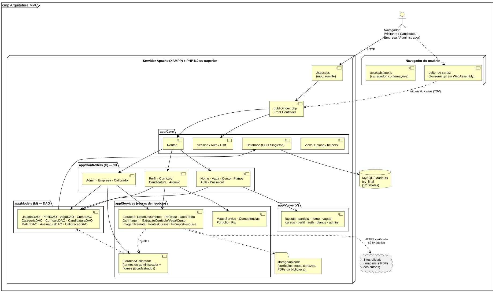
Fonte: Autoria própria (2026).
O Quadro 2 lista todas as rotas do sistema, o controller e a ação que atendem cada endereço e quem pode acessá-lo.
Quadro 2 – Mapa de rotas
| Endereço | Controller::ação | Acesso |
| index.php (raiz do site) | HomeController::index | Todos |
| contrato.php | HomeController::contrato | Todos |
| vagas.php | VagaController::lista | Todos |
| vaga.php | VagaController::detalhe | Todos |
| cursos.php | CursoController::lista | Todos |
| curso.php | CursoController::detalhe | Todos |
| planos.php | PlanosController::index | Todos (assinar: logado) |
| login.php | AuthController::login | Visitante |
| cadastro.php | AuthController::cadastro | Visitante |
| view/usuario/logout.php | AuthController::logout | Logado |
| esqueci_senha.php | PasswordController::esqueci | Visitante |
| redefinir_senha.php | PasswordController::redefinir | Visitante (com o link) |
| view/perfil/index.php | PerfilController::index | Logado |
| view/perfil/salvar.php | PerfilController::salvar | Candidato |
| view/perfil/portfolio.php | PerfilController::portfolio | Candidato; empresa e administrador (perfil público ou candidatura) |
| view/perfil/recalcular_match.php | PerfilController::recalcularMatch | Candidato |
| view/perfil/conta_excluir.php | PerfilController::excluirConta | Candidato (a própria conta) |
| view/perfil/curriculo_upload.php | CurriculoController::upload | Candidato |
| view/perfil/aplicar_extracao.php | CurriculoController::aplicarExtraca o | Candidato |
| view/perfil/curriculo_excluir.php | CurriculoController::excluir | Candidato |
| candidatar.php | CandidaturaController::candidatar | Candidato |
| view/perfil/candidatura_cancelar.php | CandidaturaController::cancelar | Candidato |
| download.php | ArquivoController::download | Dono, administrador e empresa autorizada |
| admin/index.php | AdminController::painel | Empresa e Administrador |
| admin/pages/usuarios.php | AdminController::usuarios | Administrador |
| admin/pages/categorias.php | AdminController::categorias | Administrador |
| admin/pages/cursos.php | AdminController::cursos | Administrador |
| admin/pages/assinaturas.php | AdminController::assinaturas | Administrador |
| admin/pages/calibrador.php | CalibradorController::painel | Administrador |
| admin/pages/vagas.php | EmpresaController::vagas | Empresa e Administrador |
| admin/pages/candidaturas.php | EmpresaController::candidaturas | Empresa e Administrador |
| admin/pages/talentos.php | EmpresaController::talentos | Empresa e Administrador |
| admin/pages/empresa_perfil.php | EmpresaController::perfil | Empresa |
| assets/uploads/* (imagens) | ArquivoController::imagem | Todos (fotos, logos e cartazes) |
Fonte: Autoria própria (2026).
13.8. Plano de Testes
O plano de testes reúne os casos de teste funcionais e de segurança executados no sistema, além dos testes automáticos tests/smoke.php (teste rápido) e tests/jornadas.php (uma conta temporária usa o sistema pelo navegador e é apagada no fim), que rodam antes de cada commit pelo gancho .githooks/pre-commit. Os casos abaixo foram executados e aprovados na varredura final de 27/09/2026; os do calibrador (CT25 e CT26) e os testes automáticos foram conferidos de novo na versão final, em 01/10/2026.
Quadro 3 – Casos de teste
| ID | Caso de teste | Entrada / passos | Resultado esperado | Requisito |
| CT01 | Login válido | E-mail e senha de uma conta de teste | Sessão iniciada e painel do perfil exibido | RF001 |
| CT02 | Login inválido e pausa | 8 tentativas com senha errada em 5 min | Aviso quando faltam 3; na 8ª, pausa de 5 minutos | RF001, RNF003 |
| CT03 | Cadastro sem aceite LGPD | Formulário completo sem marcar o termo | Cadastro recusado com a mensagem do termo | RF002, RNF004 |
| CT04 | Cadastro com e-mail repetido | E-mail já existente | Mensagem "Este e-mail já está cadastrado..." | RF002 |
| CT05 | Busca de vagas com filtros | Termo "vendedor", cidade "Taguatinga" | Somente vagas abertas compatíveis com os filtros | RF005 |
| CT06 | Envio de currículo PDF | Currículo PDF de 2 páginas com foto | Perfil e foto preenchidos, relatório exibido e match recalculado | RF009, RF010, RF014 |
| CT07 | Envio de arquivo inválido | Arquivo .exe renomeado para .pdf ou maior que 10 MB | Envio recusado com mensagem de formato/tamanho | RF009, RNF009 |
| CT08 | Liberação do portfólio | Perfil com todos os campos obrigatórios | Aba Portfólio liberada e notas de match exibidas | RF013, RF014 |
| CT09 | Limite do plano gratuito (candidato) | 4ª candidatura ativa sem VIP | Candidatura recusada e redirecionamento para Planos | RF016, RF027 |
| CT10 | Cancelar candidatura | Candidatura com status "enviada" | Status alterado para "cancelada" | RF017 |
| CT11 | Extração de vaga por texto | Texto de anúncio com salário, cidade e requisitos | Formulário preenchido para revisão, sem gravar | RF023 |
| CT12 | Limite do plano gratuito (empresa) | 3ª vaga ativa sem Premium | Publicação recusada e redirecionamento para Planos | RF020, RF027 |
| CT13 | Empresa altera vaga de outra empresa | Acesso a ?edit= de vaga alheia | Acesso negado (HTTP 403) | RF021, RNF003 |
| CT14 | Atualizar status da candidatura | Status "entrevista" com retorno | Candidato vê o novo status e o retorno | RF018, RF024 |
| CT15 | Download de currículo sem permissão | download.php por outro candidato ou empresa sem vínculo | Acesso negado (HTTP 403) | RF026, RNF003 |
| CT16 | Excluir usuário | Exclusão pelo administrador | Remoção em cascata de perfil, currículos, vagas e candidaturas; termos do calibrador ficam sem autor | RF029, RNF010 |
| CT17 | Formulário sem token CSRF | POST sem o campo csrf | Página de erro 403 | RNF003 |
| CT18 | Teste automático (smoke test) | php tests/smoke.php | Todas as verificações com "OK" (113 de 113) | RNF011 |
| CT19 | Leitura de cartaz no navegador | Imagem JPG de um cartaz em Painel → Vagas | Carregador amarelo com %, depois azul; formulário preenchido, sem instalar programas | RF023, RNF005, RNF007 |
| CT20 | Extrair com a caixa vazia | "Extrair" sem texto e sem cartaz | Mensagem pedindo o texto; nenhum relatório em branco | RF023 |
| CT21 | Excluir a própria conta | Senha correta e caixa de confirmação marcada | Conta e dados removidos (perfil, currículos, candidaturas, matches, tentativas de login); sessão encerrada | RF033, RNF004 |
| CT22 | Excluir conta sem permissão | Senha errada; ou id de outra conta enviado no formulário | Conta não excluída; o id enviado é ignorado | RF033, RNF003 |
| CT23 | Biblioteca de e-books | "Trazer os PDFs para a biblioteca" | E-books com o botão "Baixar" e o crédito da fonte original | RF007, RF037 |
| CT24 | Importar fichas em lote | Três fichas separadas por "---" | Prévia com 3 itens e cadastro dos marcados | RF031, RF038 |
| CT25 | Termo calibrado | Termo "Uniforme" → Benefícios e anúncio com "Uniforme fornecido pela empresa" | A linha vai para Benefícios e o termo aparece nos "Ajustes do calibrador" | RF035, RF036, RNF012 |
| CT26 | Nome conhecido | Anúncio que só cita uma empresa já cadastrada ("Padaria Pão Quente") | Empresa preenchida, com "empresa já cadastrada" no relatório | RF023, RF035 |
| CT27 | Conceder assinatura (administrador) | Premium por 30 dias a uma empresa ativa | Assinatura ativa e benefícios liberados | RF034 |
| CT28 | Testes de jornada | php tests/jornadas.php | 18 de 18 com "OK"; a conta temporária é apagada no fim | RNF011 |
| CT29 | Varredura completa | Rastrear todas as páginas nos 4 perfis | 1.701 páginas sem erro | RNF005, RNF011 |
Fonte: Autoria própria (2026).
13.9. Matriz de Rastreabilidade
A matriz de rastreabilidade liga cada requisito funcional ao caso de uso, ao código que o implementa e às tabelas do banco utilizadas.
Quadro 4 – Rastreabilidade requisito × caso de uso × código × banco
| Requisito | Caso de uso | Controller / Service | Tabelas |
| RF001, RF003 | UC01 | AuthController::login / logout | usuarios, tentativas_login |
| RF002 | UC02 | AuthController::cadastro | usuarios, perfis |
| RF004 | UC03 | PasswordController::esqueci / redefinir | usuarios, redefinicoes_senha |
| RF005, RF006 | UC04 | VagaController::lista / detalhe | vagas, categorias, matches |
| RF007 | UC05 | CursoController::lista / detalhe | cursos, categorias |
| RF008 | UC06 | PerfilController::salvar | perfis, usuarios |
| RF009 a RF012 | UC07 | CurriculoController::upload / aplicarExtracao / excluir; LeitorDocumento; ExtracaoCurriculo | curriculos, perfis |
| RF013 a RF015 | UC08 | PerfilController::portfolio / recalcularMatch; MatchService; Portfolio | matches, vagas, perfis |
| RF016 a RF018 | UC09.1, UC09.2 | CandidaturaController::candidatar / cancelar | candidaturas, assinaturas |
| RF019 | UC10 | EmpresaController::perfil | perfis |
| RF020 a RF023 | UC11.1 a UC11.3 | EmpresaController::vagas; ExtracaoVaga; OcrImagem; leitor-cartaz.js (Tesseract.js) | vagas, matches |
| RF024, RF026 | UC12 | EmpresaController::candidaturas; ArquivoController::download | candidaturas, curriculos |
| RF025 | UC13 | EmpresaController::talentos | perfis |
| RF027, RF028 | UC14.1, UC14.2 | PlanosController::index; AssinaturaDAO | assinaturas, vagas |
| RF029 | UC15.1 a UC15.4 | AdminController::usuarios | usuarios (cascata), calibracao_extracao (sem autor) |
| RF030 | UC16.1 a UC16.4 | AdminController::categorias | categorias |
| RF031 | UC17.1 a UC17.3 | AdminController::cursos; ExtracaoCurso | cursos |
| RF032 | UC18 | AdminController::painel | vagas, candidaturas, matches, usuarios |
| RF033 | UC19 | PerfilController::excluirConta; UsuarioDAO::senhaConfere | usuarios (cascata), tentativas_login |
| RF034 | UC20 | AdminController::assinaturas; AssinaturaDAO | assinaturas |
| RF035 | UC21 (UC07, UC11.1, UC17.1) | CalibradorController::painel; Calibrador; CalibracaoDAO; ExtracaoVaga / ExtracaoCurso / ExtracaoCurriculo | calibracao_extracao, vagas, perfis, cursos |
| RF036 | UC21 | CalibradorController::painel (Testar as máquinas); admin/vagas (Ajustes do calibrador) | calibracao_extracao |
| RF037 | UC05, UC17.5 | AdminController::cursos; ImagemRemota; CursoDAO::guardarNaBiblioteca | cursos |
| RF038 | UC17.4 | AdminController::cursos; ExtracaoCurso | cursos |
| RF039 | — | HomeController::index; Pix | — |
Fonte: Autoria própria (2026).